포근히 거대한 품에 안겼던 우리는 그대로 침대에 쓰러져 잠들었다. 일어난 시각은 아침 7시 30분. 새로운 여행의 하루가 밝았다. 오늘은 우리 여행에서 가장 액티비티한 하루가 될 날이었다. 두 다리로 자전거 페달을 밟아 금문교를 거쳐 소살리토를 구경한 뒤, 페리를 타고 돌아올 예정이었기 때문이다. 전날 의사 선생님과 식사를 할 때 혹시 자전거 타고 금문교 갔다 오셨냐고 여쭤봤었다. “아, 어제 갔다 왔는데 별로 안 힘들게 갔다 왔어요. 금문교 너~무 예뻐요. 전 페리타고 소살리토에서 돌아왔는데 다시 자전거타고 금문교 거쳐 돌아오는 사람도 많더라고요.”그땐 다행이라 생각하고 넘겼다. 그날 아침까지 몰랐다. 이제는 분명해졌다. 그녀는 전직 사이클 선수이거나 진짜 캡틴 아메리카임에 틀림없다. 하지만 이건 갔다 와서 알게 된 사실. 아침까진 그저 드디어 꿈에만 그리던 금문교를 직접 건넌다는 생각에 들뜨기만 했다. 그 외의 잡념은 낄 자리가 없었다.
숙소는 여전히 별로였지만 신기하게도 무료로 조식을 제공해 줬다.
자전거를 타야할 생각에 평소 잘 먹지도 않는 아침을 꾸역꾸역 입으로
들이밀었다.
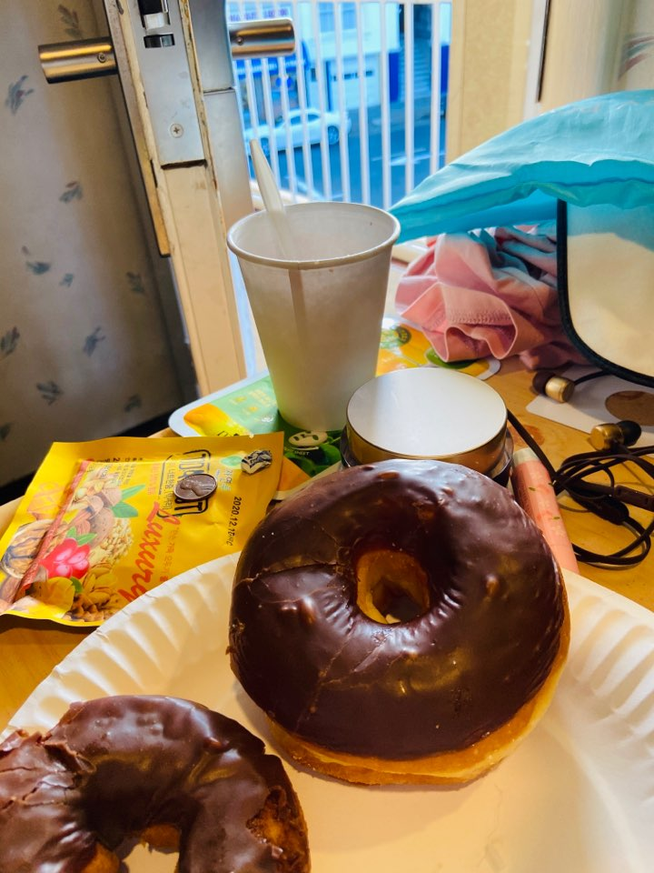
(도넛은 생각보다 맛있었다. 방문을 열면 보이는 것처럼 바로 야외로
통한다. 마음에 들진 않았지만 샌프란시스코의 살인적인 물가를 생각하면
그러려니 넘어갈 수밖에 없다.)
나는 친구들에게 오늘 자전거 타야하니 편한 바지를 입으라고 얘기해 준 뒤, 대강 오늘의 일정에서 문제가 될 부분을 떠올려 보았다. 어떤 변수가 있을까? 소살리토에서 돌아오는 페리 시간을 맞추는 것 외에는 딱히 생각나는 것이 없었다. 오히려 여유로운 하루가 그려졌다. 소살리토에 간다! 말고는 계획이 없었기에 그곳에서 2시간 가까이 있는 동안 뭘 할지, 뭘 볼지 몰랐다. 예전 같았으면 구체적이지 못한 계획에 불안해했겠지만 이젠 모호함 속에서 튀어나오는 우연함이 여행의 매력이라는 것을 알았기에 크게 걱정하진 않았다. 준비를 마치고 친구들과 밖으로 나섰다. 햇살이 따스했다. 발걸음이 어느 때보다 가벼웠다.
샌프란시스코의 대표적인 모습이라 하면 비탈길을 질주하는
노면전차(케이블카)들을 뽑을 수 있다. 과거의 향수를 불러일으킬 듯 한
전차의 모습도 특이하지만 이날 우리가 두 다리로 직접 느꼈던 것은 바로
거대한 오르막들이다. 도시가 마치 산 입구에도, 산 중턱에도, 산 정상에도
있는 것 같았다.
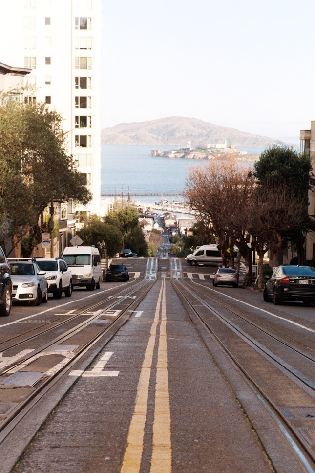
(롬바드 길 쪽에서 바라본 피어39와 길 위의 전차라인. 얼핏 봐도 경사가
상당하다. 뒤로 하얀 건물이 있는 섬이 바로 알카트라즈 섬.)
내가 어릴 적 살던 동네도 언덕배기 위에 지어진 곳이었다. 등굣길은
홀가분한 내리막, 하굣길은 고통스런 오르막. 토요일 수업을 마치고 쨍한
햇볕아래 올라오는 길은 어서 집에 가고 싶은 마음과 언덕에 지친 몸을
따로 놀게 만들었다. 친구들과 공부방을 갈 때도, 서바이벌 한답시고
동네를 이리저리 뛰어다닐 때도 모두 오르막을 다녀야 했다. 가슴 아픈
사연도 있다. 경사가 심했던 탓에 자동차 운전자의 운전 미숙으로 언덕
중턱에서 부모를 기다리던 어린 아이들이 안타깝게 세상을 떠난 일도
있었다. 그날따라 이상하게 집을 들르지 않고 공부방으로 바로 갔던 나의
기행(?)이 지금 이 글을 쓸 수 있게 만들었다. 이처럼 내 인생의 발걸음,
추억 속에서 뿜어져 나오는 온갖 희로애락이 오르막에 담겨있다. 중학교
때 평지의 도시 일산으로 이사를 온 뒤로, 오르막에 담긴 나의 어린
시절은 고스란히 과거의 잔상으로 머릿속 어딘가 깊은 곳에 숨어버렸다.
시간이 흐르고 흘러 바쁜 일상에 치여 잊고 산 줄로만 알았는데...
머나먼 미국, 샌프란시스코의 가파른 언덕배기를 걷자 다시금 떠올랐다.
난 오르막을 오를 때 힘들면 뒤로 걷곤 했다. 머리는 잊었지만 몸은
기억하고 있었던 작은 습관이 나의 옛 향수를 불러일으켰다. 숙소에서
나와 롬바드 길로 가는 오르막은 분명 처음 가는 길이었지만 뒷걸음 한
걸음마다 익숙함이 묻어나왔다. 오르막을 오르면 오를수록 시야가 탁
트였다. 숨을 크게 들이쉬었다. 처음 맞이하는 샌프란시스코의 아침. 그
공기 속엔 어린 날의 내가 내뱉었던 숨들이 가득했다.
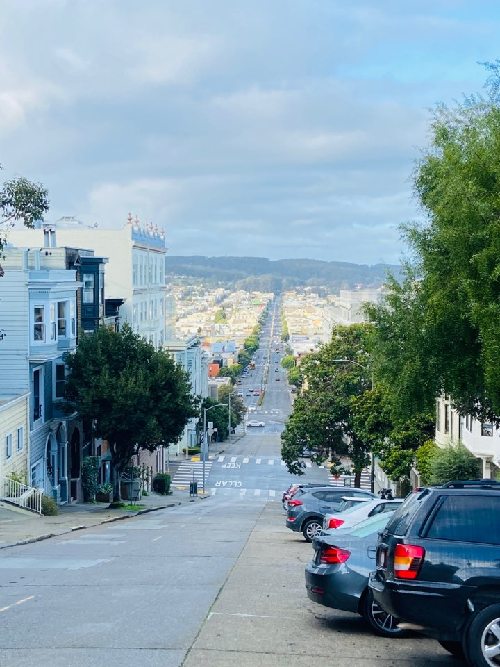
(롬바드 길로 가는 길. 이 도시에 온지 3일째였지만 진정으로 도시를
둘러보고 느끼는 것은 처음 같았다.)
롬바드 길 앞에 도착하자 사람들이 몇몇 보이기 시작했다. 워낙 유명한
관광지인 것 치고는 그 수가 적었기에 놀랐다. 아! 잠시 롬바드 길에
대해서 말하고 넘어가야겠다. 롬바드 스트리트는 구불구불한 길과 그
사이사이로 꽃이 어우러져 진정한 ‘꽃길’의 모습을 한 샌프란시스코의 대표
관광지이다. 가운데 구불구불한 길은 차가 다니는 길이고 양쪽으로 인도가
있어 직접 걸어 내려갈 수도 있다. 화려한 꽃들과 붉은 색감의 길이 조화를
이루는 유명세 덕에 영화 인사이드 아웃에 나오는 등 대중매체에서도 쉽게
찾아볼 수 있다. 때마침 우리의 숙소에서 가까운 곳이었기에 하루를
시작하는 관광으로 매우 좋을 것 같아 가볍게 찍고 가기로 일정에 넣었다.
하지만 길 앞에 도착했을 때 뭔가가 이상했다. 아니 싸늘했다가 더 맞는
표현이겠다. 꽃???
우리의 여행은 정확히 미 서부 ‘겨울’ 여행이었다. 덕분에 북서부의
시애틀과 포틀랜드에선 하루를 거르지 않고 비를 맞고 다녔으며
요세미티에서는 겨울철 통제 구역을 빼고 구경해야했다. 이런 상황에서
활짝 만개한 꽃을 기대했다면 마치 한여름에 스키 타러 간 것과 같은
어리석음일 것이다. 그리고 그 어리석음의 주인공이 바로 나다. 그냥
유명하다는 말 한마디에 정신이 홀라당 넘어가 무엇인가에 홀린 듯
롬바드 가에 다다랐다. 무엇으로 유명한지, 뭐가 그곳에 있는지에 대한
고민이 단 1도 없었다. 이러한 생각의 무능이 가져다준 결과는 이미 오래
전에 져버려 갈색으로 변해버린 꽃들의 흔적으로 우리 앞에 놓여 있었다.
그러니 고민을 해야 한다. 언제나 대상에 대해 끊임없이 생각해야 한다.
무엇을?, 왜?에 대한 답으로 ‘다들 그렇게 하니까’는 충분하지 않다.
다른 친구들의 생각은 어떨지 모르겠지만 나에게 롬바드 길은 상처뿐인
명목(名目)이었다.
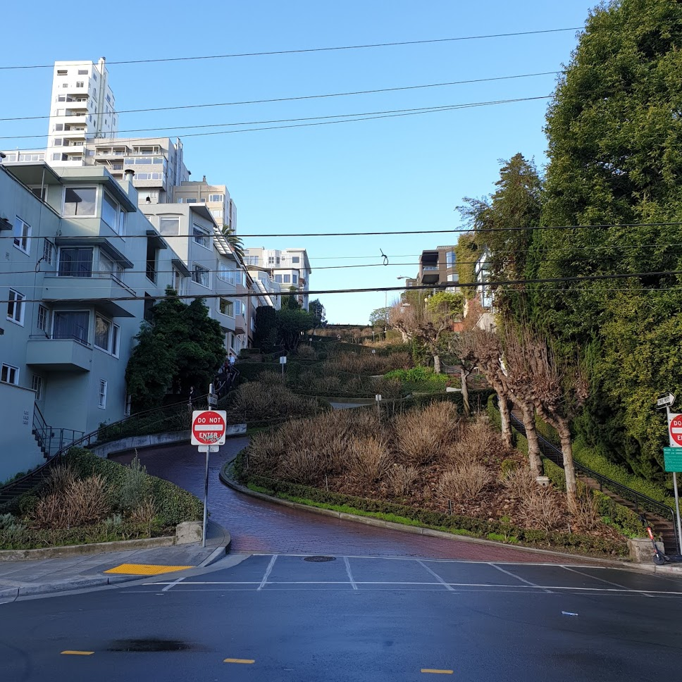
(하하하. 수국이 필 때 가세요.)
그래도 위에서 아래로 걸어 내려오는 길은 푸른 나무로 둘러 쌓여있어
기분은 좋았다. 자연주의의 향기는 계절의 아쉬움을 다 메워주진 못했지만
무지몽매한 나에게 약간의 위로가 되어 주었다.
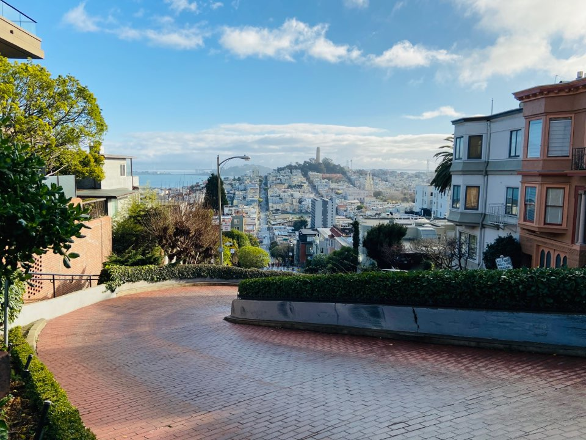
(햇살이 비칠 땐 그래도 좀 예쁘다. 기대가 커서 그랬을까?)
본격적으로 하루의 여행을 시작할 때가 왔다. 롬바드 길에서 내려와 자전거 렌트를 예약한 곳으로 가서 자전거를 빌린 뒤, 이 샌프란시스코를 자전거로 누빌 예정이었다. 렌트 가게로 가는 방법은 도보를 택했는데, 도시 곳곳이 너무 예뻤고 날씨도 화창했기에 걸으며 도시를 느껴보기에 안성맞춤이었다. 우리 외에 다른 사람들도 생각이 비슷했는지 관광객이고 현지인이고 할 것 없이 걷거나 조깅하는 사람들이 많았다. 우리는 시애틀 2일차 케리 공원에 갈 때처럼 열심히 떠들며 앞으로 나아갔다. 점점 바닷바람이 피부에 닿는 것으로 보아 바다가 가까워지고 있었다. 시애틀을 떠나 포틀랜드, 요세미티를 거치는 동안 잠시 바다와 떨어져 있었는데 다시 보니 기분이 좋았다. 바다는 언제나 사람을 기대에 부풀게 만드는 매력이 있다. 과거의 바다는 현재와 다르게 공포와 죽음의 대상이었다. 먹고 살기 위해, 혹은 다른 세계에 대한 모험심으로 사람들은 배를 타고 바다로 나갔지만 그곳엔 거센 파도와 폭풍, 거친 암초, 인간보다 몇 배는 크고 포악하기까지 한 동물들로 가득했다. 이 상황에서 해가 지면 공포감은 극에 달한다. 밤바다의 색깔, 절대 파랗지 않다. 검다. 본인이 한밤중에 돛에 의지한 범선위에 타고 있다고 생각해 보라. 주변은 마치 칠흑 같은 낭떠러지와 같고 그 한가운데에 위태롭게 떠있는 것이다. 달빛과 별자리에 의지해 나아가야 하지만 바람도, 조류도 인간이 좌지우지 할 수 있는 대상이 아니다. 그래서 우린 신을 찾았다. 포세이돈이라는 막강한 신을 불러냈다. 올림포스에서 유일하게 제우스에게 반기를 들 수 있을 정도로 강력한 힘을 가진 그에게 인간은 자신들의 생명과 안녕을 빌었다. 바다가 무섭고 그 앞의 한 인간은 너무나 미약했기에 그럴 수밖에. 시대가 바뀌고 기술이 발전하며 조금은 포세이돈에게 맡겼던 힘을 다시 찾아오기 시작한 인간들은 차츰 바다에게도 공포가 아닌 낭만의 감성을 입히기로 마음먹었다. 바다의 검은 빛을 걷어내고 푸른빛을 채웠다. 이제 바다는 젊음을 즐기는 청년들에겐 에너지를, 황혼에 젖은 노인들에겐 새로운 여명을, 삶에 지쳐가는 이들에겐 휴식을 주는 안식처로 바뀌었다. 그렇게 바다는 오늘도 나를 기대에 부풀게 했다.
걷다보니 어떤 공원에 도착했다. 당시엔 어떤 곳인지 몰랐는데 아이패드에
찍힌 위치를 보니 아쿼틱 파크로 샌프란시스코 국립해양역사공원이었다.
잠시 숨도 고르고 경치 구경도 할 겸 해변에 주저앉아 바람을 쐬었다.
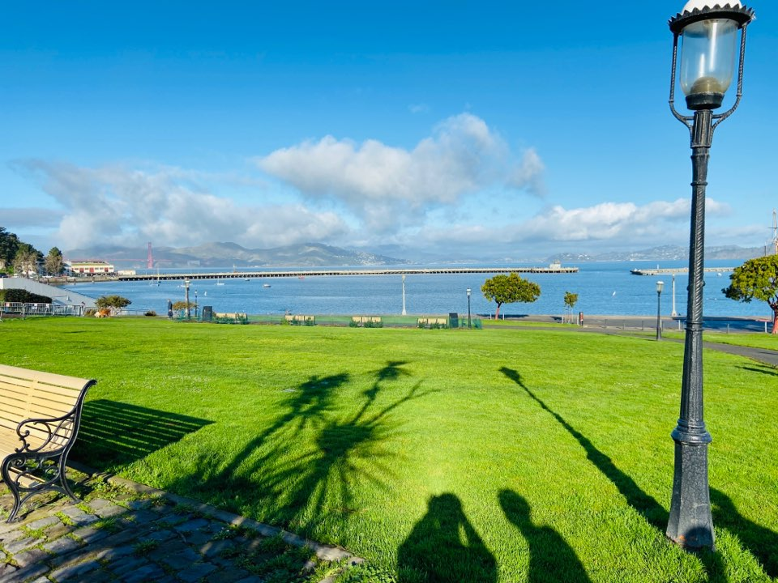
(Aquatic Park Cove.)
그러던 중 희원이가 이 근처에 아이리시 커피로 유명한 집이 있다고 해 나랑 누군가가 그곳으로 향했다.(창민인지 희원인지 기억이 잘...) 내가 상상한 아이리시 커피는 그냥 커피 위에 크림이 올라와있는 것이었다. 사실 아이리시 커피가 뭔지도 잘 몰랐다. 역시 그냥 롬바드 스트리트와 같이 유명하다기에... 카페로 향한 나는 꽤나 북적거리는 사람들을 헤치고 커피와 과일주스를 주문하는데 겨우 성공했다. 진한 커피 위로 뽀얀 크림이 사~악 올라온 영롱한 자태. 그 자리에서 직접 갈아 만든 신선한 과일 주스...를 받고 일어나려는 찰나, 안에서 드시면 안 된다는 말과 함께 커피에 넣어서 먹는 거라는 말을 건네며 직원이 작은 병 하나를 내밀었다. 이게 무엇일까? 병을 가만 보자 WHISKEY라고 적혀있었다. 오! 아이리시 커피는 커피+크림+아이리시 위스키의 조합이었던 것이다! 가볍게 커피 한 잔 할 생각이었는데 뜻하지 않은 낮술이라니. 가게 안에서 먹으면 안 된다는 것도 나의 나이 때문이었을 게다. 아 신분증 검사한 적이 없으니 외모 때문이라고나 할까. 어차피 테이크 아웃이었기에 한손엔 주스, 한손엔 커피, 주머니엔 위스키를 들고 신나게 공원으로 돌아왔다.
우리 4명은 바다를 바라본 채 나란히 턱에 걸터앉았다. 파도소리와
바닷바람은 낯선 이방인들에게 천천히 다가와 조심스레 뺨을
어루만져주었다. 포근한 감촉 아래 우리는 아이리시 커피 조제에 들어갔다.
조제랄 것도 없는 것이 그냥 위스키를 몽땅 쏟아 부었다. 컵을 약간 흔들어
섞어준 뒤, 드디어 대망의 첫 모금. 커피의 쓴맛과 위스키의 쓴맛이
합쳐졌지만 향이 너무나 좋아 달콤쌉싸름한 맛으로 느껴졌다. 쓴맛이
올라올 때면 달달한 과일주스를 한입 마시면 된다. 청량하고 상큼한 과일의
향기가 아침 햇살을 타고 주스에 내려든 것 같았다. 커피와 주스를 마시며
여유를 즐기는 순간, 탁 트인 바다가 눈에 들어왔다. 동시에 그 위를
지나는 붉은빛의 금문교는 다음을 위해, 앞으로 나아가기 위해 마음을
다잡을 수 있게 해줬다. 에너지를 얻고 다시금 일어나 출발했다. 뛰고 싶을
정도로 상쾌했다. 취한 것이 분명했다.
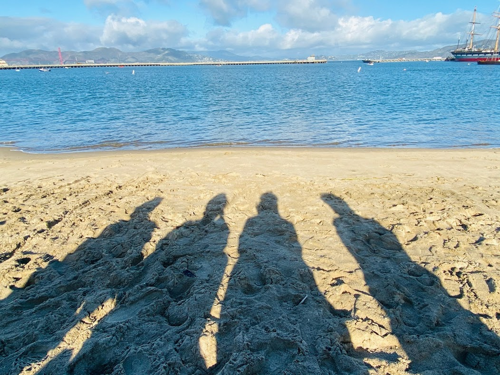
(나란히 앉아 바다를 즐기는 이방인들. 왼쪽으로 금문교의 탑이 보인다.)
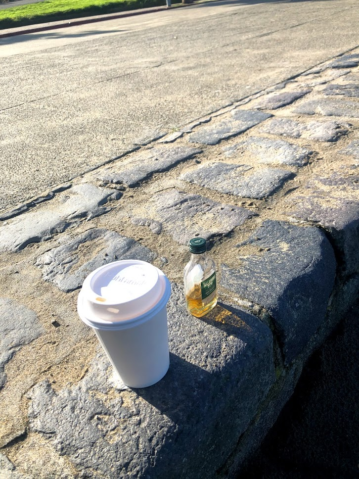
(아이리시 커피.)
어느덧 근처에 있던 자전거 렌탈 가게에 도착했다. 푸근한 인상의 흑인
아저씨가 각자 키에 맞는 자전거를 골라 준 뒤, 소살리토까지 가는 지도를
주시며 오후 5시까지 돌아오라는 말과 함께 잘 다녀오라는 인사를 해줬다.
우린 빠르게 헬멧을 쓰고 바로 출발. 본격 고생길이 열린 순간이었지만
그때까진 몰랐다. 신나게 샌프란시스코의 공기를 가르며 저 멀리 보이는
금문교로 향했다. 지도도 필요치 않았다. 무작정 앞으로 나아갔다. 다행히
주변에 우리와 목적지가 같은 사람들이 많아 보였기에 걱정 역시 필요하지
않았다.
금문교로 향하기 전에 들러야 할 곳이 있었다. 영화 [THE ROCK]에서
주인공인 숀코너리가 딸을 만나는 장소인 샌프란시스코의 관광지, 팰리스
오브 파인아트(Palace of Fine Arts)가 바로 그곳이었다. 영화 [THE
ROCK]얘기는 다음날 알카트라즈를 갈 예정이기에 4편에서 하도록 하고,
팰리스 오브 파인아트에 대해 소개하자면 파나마-퍼시픽 엑스포에 예술품
전시를 위해 1915년에 건축된 곳이다. 건축가인 버나드 메이백(Bernard
Maybeck)은 고대 로마와 그리스 건축에서 영감을 받아 이 건물을
디자인했다. 건물 옆으론 인공연못과 산책로가 구비되어 있고 유칼립투스
나무와 연못에 비친 건물이 유럽에 와 있는 듯 한 풍경을 자아낸다. 유럽을
꼰대라고 질책하면서도 속으로는 동경하는 미국인들답게 현지에서도 인기가
매우 높은 장소라고 한다. 이런 곳을 놓칠 수 없지. 마침 가는 길이었기에
둘러둘러 구경하기로 했고 열심히 페달을 밟아 잠시 동안 유럽으로
가보기로 했다.
사진에 담지는 못했지만 자전거를 타고 팰리스 오브 파인아트로 가던 중
숲길을 빠져 나오자마자 탁 트인 공원과 내리막이 우릴 맞이했던 길이
있었다. 초록의 잔디밭 위로 밝은 햇살이 고루 비치고 있는 장관 중에
장관이었고 정말 이날 본 장면 중 최고로 꼽을 만 했으나 너무 속도가
빨랐던 탓에 바람과 같이 공원을 지나쳐 버렸다. 뒤에서 따라오던 재정이의
“와 여기 너무 이쁘다아아아아...”라는 말이 끝나기도 전에 지나가
버렸으니 짧았던 시간만큼 그 아쉬움은 너무 컸다. 사진 한 장 남기지 못한
찰나의 순간, 눈을 화려하게 장식해준 그곳을 이렇게나마 다시금 추억으로
떠올려 본다.
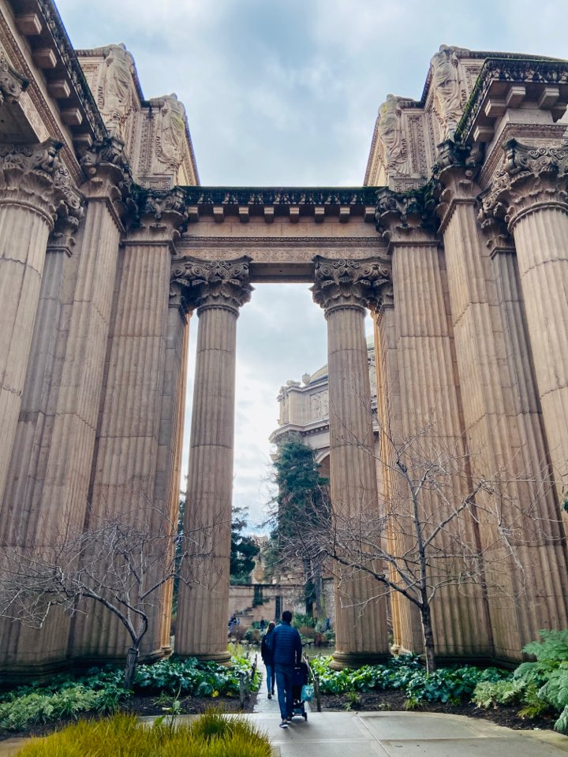
(팰리스 오브 파인아트 들어가는 길.)
팰리스 오브 파인아트에 도착한 우린 자전거를 묶어둔 뒤 건물로 향했다.
관광객도 많았고 한껏 멋을 낸 채 사진을 찍는 한 무리의 사람들도 있었다.
그만큼 아름다운 곳이었다. 우리도 셀카봉에 카메라를 들고 사진을 찍기
바빴다. 이리 돌고, 저리 돌며 정신없이 영상도 찍고 한명씩 포즈를 취하며
사진을 남기기도 했다. 시간이 지나며 점점 해가 나기 시작했고, 햇빛이
건물을 비추자 더욱 아름다워진 팰리스 오브 파인아트 주변을 가볍게 걸어
보았다.
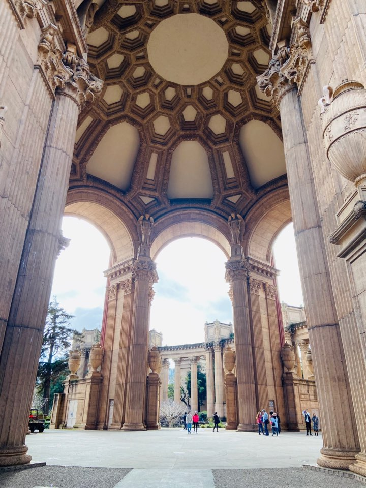
(마치 피렌체 두오모 같기도 하다.)
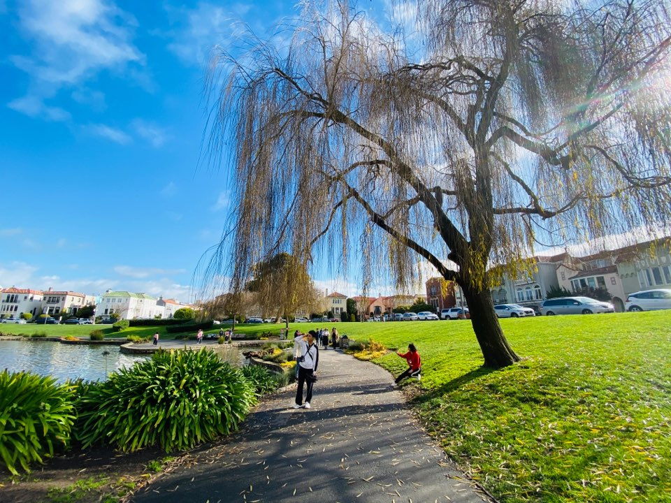
(나무 아래 창렬.)
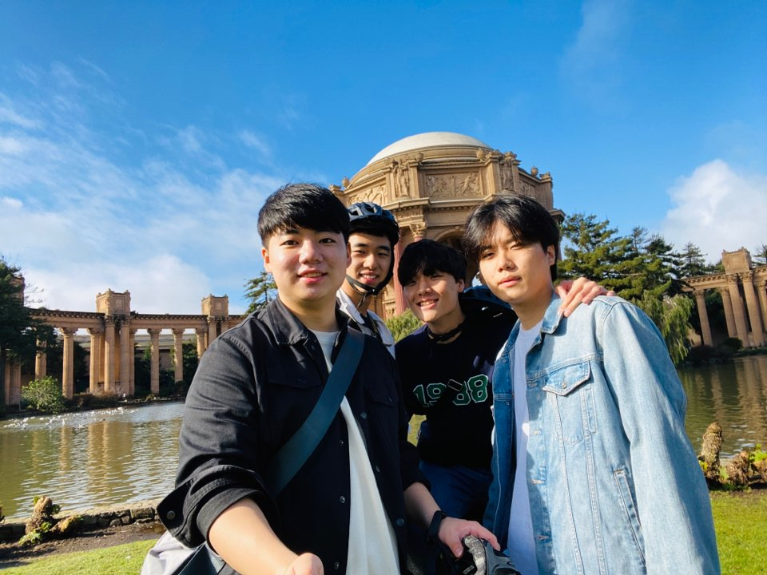
(건물이 가려지든 말든 상관없는 4명.)
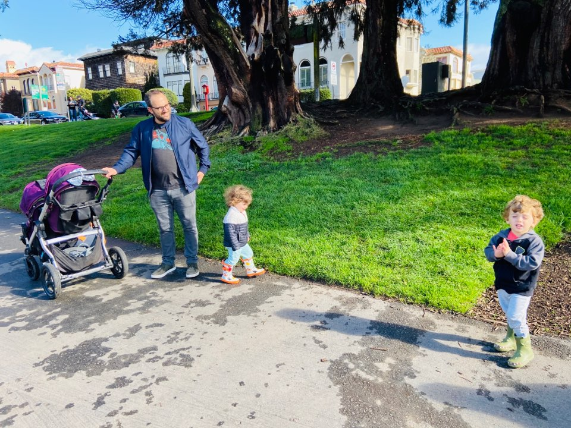
(나들이 나온 가족. 아버지가 딱 애플에서 근무할 것 같이 생겼다.
이처럼 파인아트엔 관광객뿐만 아니라 샌프란시스코 주민들도 많이
놀러온다.)
파인아트 구경을 마치고 나온 뒤 서둘러 금문교로 향했다. 중간에 몇 번
길을 잃기도 했지만 현대과학기술덕분에 제대로 된 길을 찾을 수
있었다.
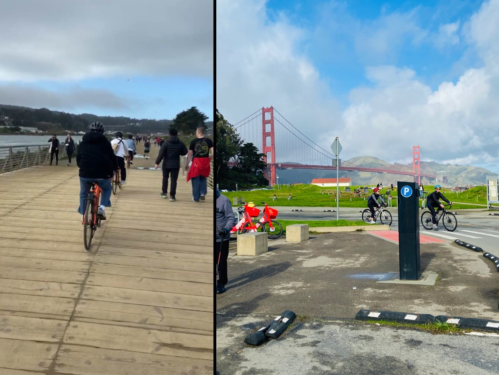
((좌)칙칙폭폭. 선Doo의 리드, 한손엔 카메라를 쥔 채 다른 한 손으로
자전거를 타느라 힘들었다.
(우)점점 가까워지고 있는 금문교. 어서 가자!)
멀게만 느껴지던 금문교가 가까워지자 마음이 설렜다. 드디어! 영화
속에서나 보던 다리가 내 눈 앞에 놓이다니! 어쩌면 여행을 오기 전부터
가장 학수고대하던 순간 중에 하나였을 것이다. 하지만 걸림돌이 하나
있었다. 금문교가 가까워질수록 저 다리가 생각보다 높게 위치하고 있다는
것이었다. 우린 밑에 있었고 다가갈수록 더 큰 각도로 고개를 들어야
다리가 보였다. 오르막을 올라야 한다! 허벅지에 힘이 들어가기 시작했다.
운동과는 거리가 먼 삶을 살다 여행을 떠나왔으니, 오랜만에 가해진 강한
자극에 놀란 근육들은 언덕을 오르면 오를수록 산소 부족으로 허덕였다.
뒤를 보니 몇몇 친구들은 이미 내려서 끌고 올라오고 있었고 나와 창민이만
계속 달렸다. 그런 우리 옆으로 강력한 내연기관을 지닌 자동차들이 우릴
비웃듯이 스쳐 지나갔다. 아... 우린 왜 현대문명의 혜택을 받지 못하는
것일까. 전기 자전거를 신청할걸. 그러고 나선 어제의 의사 선생님이
떠올랐다. 이 길을 힘들이지 않고 다녀왔다니, 진짜 캡틴 아메리카가
아닌가 싶었다. 이 고통의 시간 속 유일한 즐거움은 눈만큼은 피로하지
않고 행복했다는 것이다. 높이 올라갈수록 우리가 지나온 길들이
내려다보였고 바다를 가로지르며 금문교 아래를 지나는 배들도 눈에
들어왔다. 저 멀리 보이는 푸르른 잔디밭과 파란 하늘, 쪽빛 바다, 그 사이
놓여있는 하얀 구름들. 하늘의 선물들의 피날레를 장식하는 것은 인간의
손으로 지은 붉은 금문교였다. 그래. 이 맛에 가는 것이다. 허벅지는
터질지언정 눈은 호강하고 있지 않은가. 그날 자전거 위에서 바라본
샌프란시스코는 정말 아름다웠다. 직접 두 다리로 도시를 느끼며 점점
샌프란시스코가 나에게로, 내가 샌프란시스코에게로 다가가는
느낌이었다.(물론 다시 간다면 전기자전거로^^)

(우리가 지나온 길.)
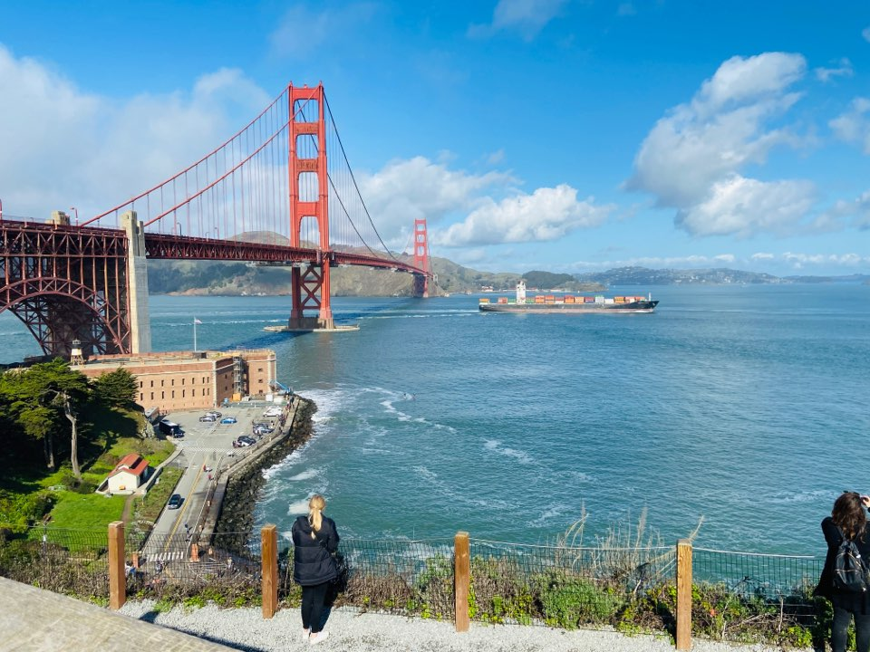
(아직도 기억이 선명한 그날의 풍경과 헐떡임.)
다행히 샌프란시스코 관광공사도 오르막 올라오기 힘들 것을 알았는지
중간에 뷰 포인트로 위장(?)한 쉼터를 몇 개 마련해 두었다. 우리와 같이
지친 사람들이 목을 축이며 쉬고 있었고 멋진 풍경을 배경삼아 사진을 찍고
있었다. 우리도 서둘러 카메라를 꺼내 사진을 찍었고 그렇게 탄생한... 이
DOORAVEL 홈페이지의 얼굴이자 천년에 한번 내려온다는 손길. 희대의 역작,
시대의 마스터피스. 더 이상의 수식이 불가능한 사진되시겠다.
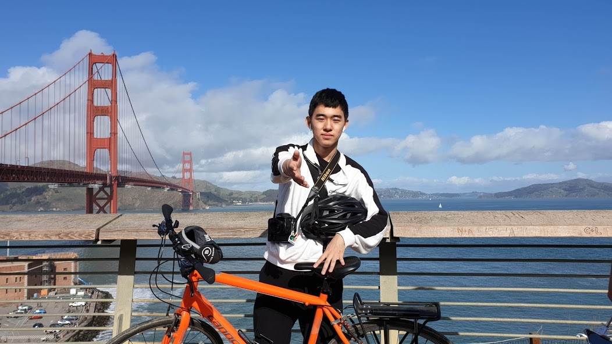
(“그대여, 내 손을 잡아요.”)
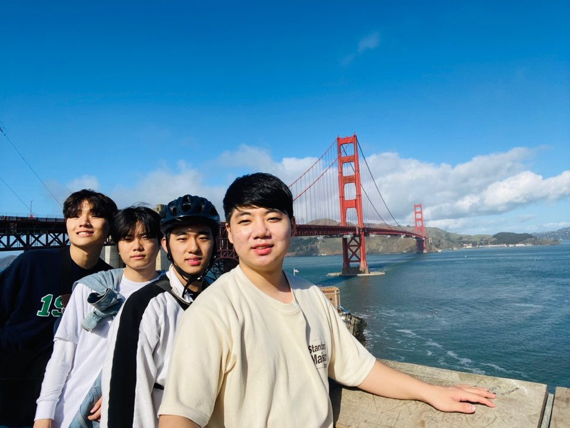
(죽도록 힘들지만 사진은 찍고 싶어.)
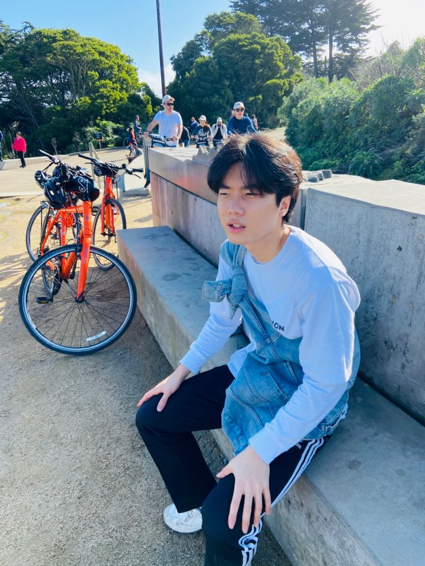
(지친 두.)
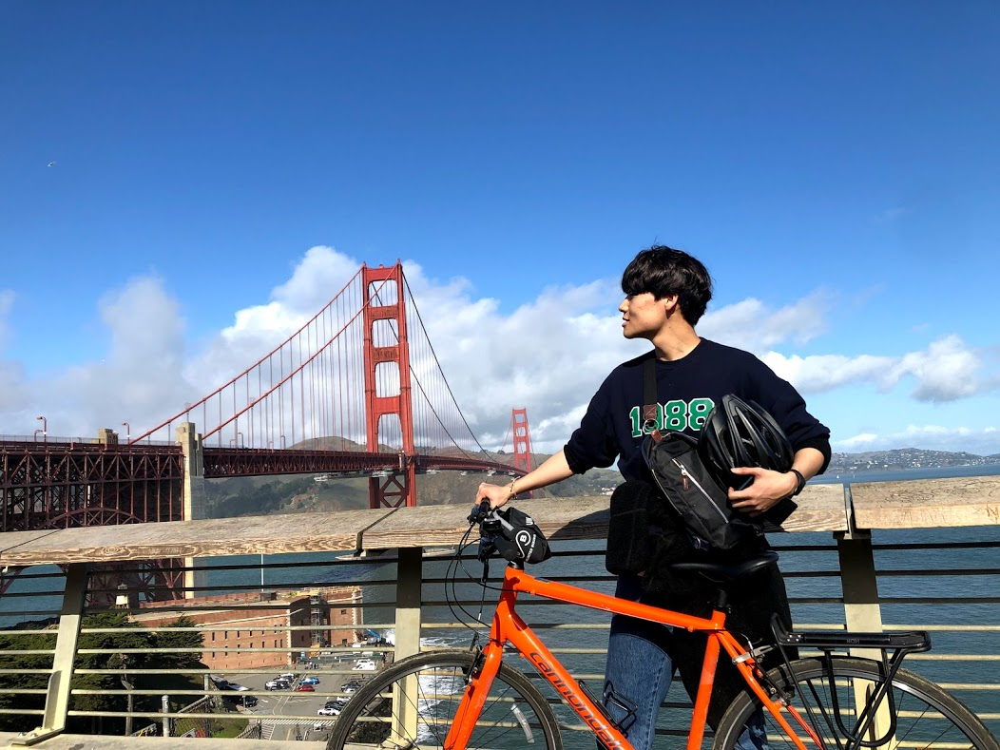
(다가올 그의 미래는 생각하지 못한 채... 금문교를 바라보며.)
2020년 1월 26일. 오늘 아침은 여느 때와 같이 안개가 깔려 해가
떴는지도 잘 몰랐다. 아침마다 나를 사랑스럽게 만져주는 주인도 아직
잠만 자는 것으로 보아 스산함이 감도는 공기에 눌린 것이 확실하다.
하음... 하품만 계속해서 나온다. 모처럼 아침 산책을 갈 수 있는 일요일
아침인데 주인은 잠만 자고 나는 무료하기만 하다. 어서 가서 그를
깨워봐야겠다. 정신없이 핥고 짖다보면 결국 못 베기고 일어나겠지. 내
계획은 성공적이었다. 마지못해 일어난 주인은 알겠다는 듯이 밥을
꺼내왔다. “이봐요. 난 지금 배고픈게 아니라 심심한 거였다고...”라고
말하고 싶었지만 알아들을 턱이 없다. 인간들은 눈치가 너무 없어
문제다. 나는 “손” 하면 손 내밀어 주고 “앉아” 하면 앉아주고 별 말을
다 알아 듣는데 왜 내 말은 몰라주는 걸까. 일단 먹고 나서 문을 긁고
있으면 대충 알아들을 것이다. 그렇게 멍청한 놈은 아니길.
밥은 역시 맛없었다. 먹었으니 소화를 시키러 가야지. 이런 당연한
생각을 나도 하는데 주인은 밥을 먹으면 드러눕기만 한다. 더 이상 두고
볼 수만은 없다. 쟤가 쓰러지면 나도 굶게 될 것이기에 강제로 운동을
시키기로 마음먹고 문으로 향했다. 귀찮아하는 눈빛이 역력하지만 오늘은
일요일이라고! 평소에 혼자서 아침에 집에 누워있느라 얼마나 심심했는데
쉬는 날 운동도 하고 시간도 보낼 겸 산책 좀 가면 어디가 덧나나?
이놈의 주인아! 반복해서 주인의 다리와 문을 긁다 보니 대충 내 말을
알아들은 것 같다. 두 번째 성공이었다.
우리 집은 샌프란시스코의 아름다운 바다가 보이는 제퍼슨 스트리트에
위치한다. 조금만 걸어가면 금문교까지 이어지는 산책로가 있어 산책하기
참 좋다. 주인 녀석, 게을러보여도 돈은 많은가 보다. 오랜만에 외출하는
길, 바다도 보고 햇볕도 쬐고 친구들도 만나야겠지만 무엇보다 지난번에
만났던 사랑스러운 그 아이를 또 보고 싶다. 몸에서 향긋한 냄새가 나던
그 아인 처음 만났을 때부터 먼저 내게로 다가와 볼을 맞댔다. 주인이
방해하지만 않았어도 둘이 같이 좀 더 오래 사랑을 나눌 수 있었는데,
아쉬웠다. 오늘은 기필코 방해받지 않으리라. 밖으로 나서는 길,
오랜만에 찾아온 설렘이 반가웠다.
점점 해가 중천에 떠오르자 안개가 걷히고 태양빛을 머금은 금문교는
한층 더 밝게 빛났다. 날이 좋은 만큼 산책로엔 사람들과 개들로 붐볐다.
그중엔 옆집 사는 친구도 있었다. 좀처럼 보기 힘든 친구인데 나처럼
떼써서 주인을 억지로 이끌고 나왔나보다. 리트리버 3형제도 보였다. 그
집 주인은 조깅을 즐기는 호리호리한 체격의 건장해 보이는
청년이었는데, 조깅을 할 때 항상 3형제를 데리고 나왔다. 지난번에
얘기했을 땐, 그런 주인이 귀찮다고 푸념을 늘어놓기도 했으나 그들도
주인과 함께 달리는 것을 싫어하진 않았다. 그 얘기를 들으며 한없이
그들이 부러웠던 나였다. 오늘은 특이하게 단체로 관광 온 사람들도 눈에
띄었다. 보통 이 산책로엔 단체 관광객은 오지 않는다. 이곳은 길이 그리
넓지 않고 오래 걸어야 하기 때문이다. 단체인지 개인관광인지 어떻게
아냐고? 주인과 비슷해 보이는 피부색에 형형색색 원색의 옷을 입고
있다면 보통 단체관광이다. 그들 무리의 선두엔 항상 깃발을 높게 치켜든
사람이 존재한다. 리더인가보다. 평소 금문교 주변엔 안개가 짙게 끼는데
오늘은 해가 중천에 떠가며 안개가 다 걷힌 것으로 보아 계 탄 사람들이
분명하다.
주인은 벌써 지친 기색이다. 아직 금문교까지 한참 남았는데, 벌써
돌아갈 것만 같다. 나의 사랑스런 그녀를 만나지 못했으니 그럴 순 없다.
힘차게 끌고 나가야지. 어라? 이상한 한 무리의 사람들이 보인다. 여행
온 사람들 같긴 한데, 일렬로 산책로에서 자전거를 타고 나아가는 모습이
마치 기차 같다. 이곳이 도보만 허용된 길이라는 걸 모르는 건가? 별난
사람들이다.
주인을 이끌고 금문교에 다다르기 전 쉼터에 도착했다. 이 녀석, 이젠
한계에 다다른 것 같다. 하지만 나의 그녀는 아직도 보이지 않았다.
오늘은 산책을 나오지 않은 것일까? 점점 설렘이 허탈로 바뀌어간다.
실망하고 있던 찰나, 아까 그 기차놀이를 하던 녀석들이 또 눈에
들어왔다. 이번엔 한 명씩 자전거를 붙잡고 사진을 찍는다. X폼
잡기는... 흔히 봐왔던 광경이라 별로 새롭진 않았다. 그들은 얼핏
보기에 4명이 한 조로 움직이는 것 같았다. 한 놈은 우리 주인마냥 눈이
풀린 것으로 보아 지친 것 같았고 두 녀석은 굉장히 신나보였으며 나머지
하나는 그 표정을 읽을 수가 없었다. 오늘따라 이상하게 저들과 동선이
겹치는 것 같다. 보고 싶은 그녀는 없고 이런 녀석들과만 마주치다니,
운이 없나 보다.
계속해서 금문교 입구까지 나아갔다. 웬일인지 주인도 이젠 순순히 나를
따라온다. 포기한건가? 입구에 다다르자 역시나 차들이 쌩쌩 달리고
있었다. 여기가 내가 와본 가장 먼 곳이다. 한 번도 저 다리 너머의
세계를 가보지 못했다. 빠르게 달리는 차들이 내는 소리, 흔들릴 것만
같은 다리, 그와 합쳐져 불어오는 바람. 너무나 무서웠고 차마 가볼
용기가 없었다. 다리 건너의 땅엔 무엇이 있을까? 혹시 내가 만난 그
아이가 저곳에 살고 있진 않을까. 그래, 오늘만큼은... 이번만큼은...!
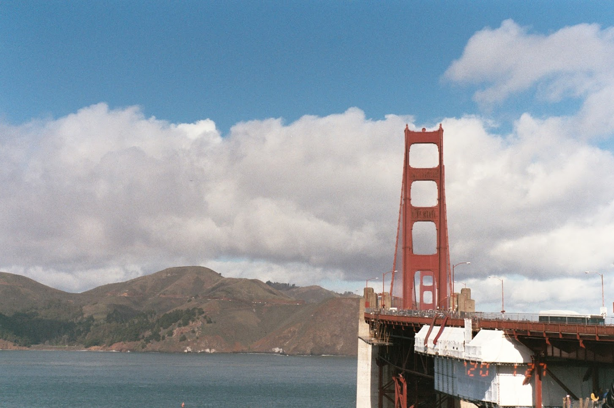
(다리에 오르기 직전.)
사진을 찍고 서둘러 움직였다. 벌써 시계는 12시를 가리키고 있었다. 어서
다리를 건너 소살리토로 건너가고 싶었고, 돌아가는 배 시간도 몇 시인지
잘 몰랐기에 최대한 빨리 가서 기다리는 방향을 택하기로 했다. 드디어
금문교를 목전에 둔 곳에 도착했다. 날씨도 풍경도 너무 좋았다. 잠시
입구에서 친구들과 사진을 남긴 뒤 가방과 신발 끈을 고쳐 매고 다리 위로
올라섰다. 생각보다 자전거 도로는 너무 좁았고 옆으로 차들이 굉장히 빠른
속도로 달리고 있었다. 차들이 일으키는 바람과 소리의 위압감이 거셌고
편도인줄 알았던 자전거 도로는 왕복 도로였기에 맞은편에서 자전거들 또한
엄청난 속도로 달려오고 있었다. 까딱 마주 오는 자전거와 충돌했다간
소살리토보다 미국의 엄청난 의료비용 청구서를 먼저 맞이하게 될 터였다.
심지어 마치 팔콘을 추월하는 캡틴처럼 뒤에서 다가오는 자전거들도 그
길에 가세해 금문교 위의 자전거 도로는 3개의 흐름이 공존하는 곳이
되어버렸다. 한 눈 팔았다간 무슨 일이 일어날지 몰랐기에 많이 긴장되는
순간, 앞에서는 조심하라는 고함소리, 뒤에서는 "ON YOUR LEFT!" 온갖
소리에 정신없었다. 하지만 긴장도 계속되면 느슨해지고 여유가 생기기
마련. 점점 불어오는 바람의 시원함을 즐기기 시작했고 눈에 경치도
들어왔으며 나도 누군가에게 “ON YOUR LEFT!"를 외치며 달릴 수 있게
되었다. 다리 중간을 넘어서자 슬슬 딴 짓할 마음도 생겼다. 카메라를 꺼내
한손에 쥔 채 영상을 찍기 시작한 것이다. 한손으론 자전거 운전을, 다른
손으론 카메라를 잡고 왼쪽으로 보이는 멋진 풍경, 뒤에서 따라오는
친구들, 앞서가는 창민이의 뒷모습을 영상에 담았다. 지금 생각해보면
굉장히 위험한 일이었지만 어떠한 본능이 나를 이끈 것 같다. 다음엔
안전하게 체스트캠이라도 달고 와야겠다.
생각보다 다리는 매우 길었다. 그 길이만큼 내 다리도 아파왔다. 이미
다리에 오르기 전 오르막에 모든 에너지를 쓴 상태였는데 금문교는 끝날
기미가 보이지 않았다. 겉에서 본 낭만이 속에서 겪는 고됨으로 변하고
있었다. 현수교의 거대한 탑 아래, 자전거를 세워둔 뒤 바다를 바라보았다.
그렇게 바다 한가운데 홀로 떠있었다.
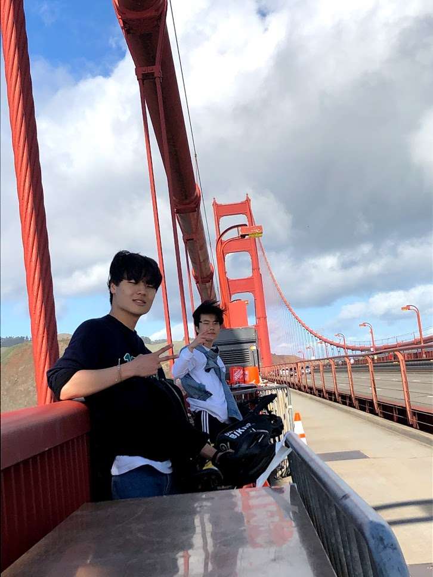
(금문교 위에서.)
다리로 가고 싶었다. 건너가보고 싶었다. 저 멀리 보이는 다른 세계로 향하고 싶었다. 근데 주인 녀석이 돌아가려한다. 오늘만큼은 지지 않으리. 차가 무서워도, 달리는 자전거가 무서워도 가보자고 마음먹었다. 달려가려는 순간, 자전거들이 내 앞으로 빠르게 지나갔다. 호기롭게 출발했으나 단 몇 초 만에 쫄아 버렸다. 게으른 줄 알았던 주인이 날쌔게 목줄을 잡아끌지 않았으면 하마타면 그녀를 보기 전 저세상으로 건너갈 뻔 했다. 어떤 놈들인지 잡히기만 해봐라. 어라? 뒷모습이 익숙하다. 기차놀이. 그놈들이었다. X폼 잡던 놈들도 나처럼 다리를 건너가려는 것 같다. 저들도 다리로 올라서기 전 머뭇거리는 것으로 보아 조금 무서워하고 있는 것이 분명했다. 저들도 가는데 나라고 못 갈 것이 없었다. 주인아, 한번만 좀 가자. 뒤를 돌아보니 그는 친구와 얘기를 나누며 무심히 줄을 잡고 있을 뿐이었다. 난 한시가 급한데 저리 여유롭게 농담 따먹기나 하고 있다니. 이대로 가만히 있을 순 없었다. 어디보자... 슬슬 주인이 웃는데 정신 팔릴 때가 됐으니 손아귀에 힘이 풀린 틈을 타 뛰쳐나가면 될 것이다. 어라? 지금이다!
소살리토로 향하는 길을 다시 확인한 뒤, 우린 또다시 페달을 굴렀다. 한번
쉰 덕분인지 금방 다리 끝에 다다랐다. 막상 끝나니 아쉬웠던 금문교를
뒤로한 채 우린 다리에서 나와 내리막을 달렸다. 경사도 급했고 길도
굽이치고 있었기에 다시금 긴장되던 순간, 두 손에 힘이 들어가기
시작했다. 점차 속도도 붙었다. 또다시 위험천만한 질주에 발을 담근
것이다. 그래도 재미는 있었다. 시원하게 바람을 가르며 질주를 즐겼다.
오르막과 평지에 지친 허벅지도 내리막을 만나 기뻐하는 것 같았다. 그렇게
달리던 중, 뒤에서 내 귀를 때리는 섬찟한 소리가 들려왔다. 바퀴가 바닥에
끌리는 소리. 급하게 브레이크를 밟으면 나는 소리였다. 내 뒤는
희원이였기에, ‘아, 드디어 한 놈이 굴렀나? 병원행인가?’하고 뒤를 봤는데
다행히 넘어지진 않았나 보다. 얼굴을 보니 잔뜩 놀란 표정이었다.
“조심해!”를 외치며 남은 내리막을 내려왔다. 평지에 다다르자 딱 사진
찍기 좋은 곳이 보였다. 무사히 다리를 건너온 것을 기념하기 위해 잠깐
자전거를 멈추고 그곳에 잠시 머물렀다. 다리 위로 높게 뜬 태양이 눈에
보이는 모든 물체에 빛을 뿌렸고 그 광명을 받은 바다, 금문교, 돌,
나무들이 일제히 빛에 화답하고 있었다. 그저 내 주위의 풍경을 일별했을
뿐인데, 눈에 남은 잔상이 다시금 돌아보게 만들 정도로 멋진
풍경이었다.
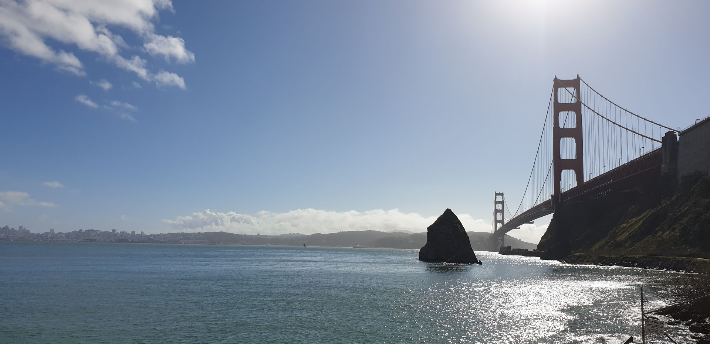
(내려와서 만난 풍경.)
이제 소살리토까지 얼마 남지 않았다. 소살리토까지 가는 과정에서 본 샌프란시스코가 이리 아름답고 멋진데 목적지인 소살리토는 또 얼마나 아름다울까 기대가 됐다. 빨리 가고 싶었다. 어서 가서 여유와 낭만의 추억을 남기고 싶었다. 기대감에 부풀어 출발한 그때, 이번엔 어디선가 뻥!하는 총소리와 비슷한 엄청난 소리가 귓전을 때렸다. ‘아, 시애틀에서도 총격이더니 이제는 급기야 내 눈앞에서 총을 쏘는구나! 이런 f**king America!'하며 주위를 보았다. 앞서 가던 애들도 놀란 눈치였다. 딱히 그들에게 문제가 생긴 것 같진 않았기에 뒤를 돌아보았다. 희원이의 절뚝(?)거리며 자전거를 타는 모습은 그 날카로운 소리의 정체가 총소리가 아니고, 타이어가 터질 때 나는 소리임을 우리에게 알려 주었다. 바퀴가 터졌다. 희원이는 무슨 일이 생겼다는 이상함, 앞으로 가야한다는 절실함이 교차했는지 자신의 낭심을 바라보며 힘차게 페달을 밟았지만 뜻과는 다르게 자전거는 앞으로 나아가지 못했다. 뒷바퀴가 터진 것이었다. 아까 내리막에서 했던 드리프트를 이 얇은 자전거 바퀴는 견뎌내지 못했다. 이렇게 그는 이날 여행의 주인공이 되었다.
올 스톱이었다. 우리는 어떤 해안경비소(US Coast Guard Station Golden
Gate)앞에 서서 그 어느 때보다 더 당황해하고 있었다. 맘껏 당황한 뒤,
나는 자전거를 빌릴 때 받았던 영수증을 꺼내 가게에 전화해보기로 했다.
영어, 특히 프리토킹에 익숙지 않은 사람으로서 외국인과 얼굴을 마주하고
얘기하는 것보다 외국인과 전화통화를 하는 것은 약 만 배정도 어렵게
다가온다. 표정이나 바디랭귀지를 사용할 수 없기 때문에 오로지 귀에 온
신경을 집중해 얘기를 듣고 입에 온 신경을 다해 답해야 하기 때문이다.
추가로 그 어떤 영어듣기테이프보다 빠른 속도의 영어를 듣는 것은 덤이다.
여행을 오기 전 시애틀 호텔 맥스를 예약하는 과정에서 미국인과 전화
통화를 한 적이 있었는데, 당최 뭐라는지 헷갈렸던 기억이 있다. 그 당시
나는 그저 귀에 들려오는 몇몇 단어를 기준으로 말의 뜻을 추측해 답변할
뿐이었다. 그 짓을 여기서 또 해야 한다니... 눈앞이 깜깜해졌다. 하지만
뭐... 다른 방도가 없었기에 번호를 누르고 통화를 했다. 역시나 귀를
지나가는 단어들. 뜻도 모른 채 흘러가는 말 하나하나가 아쉬웠다. 그래도
꿋꿋이 현재 타이어가 터졌으며 혹시 픽업이 가능한지 물어 보았다.
가게에서는 지금 우리의 위치가 어딘지, 계속 갈 것인지 아니면 다시
돌아올 것인지를 물어 보았다. 그러고는 소살리토에 위치한 다른
렌탈샵에서 자전거를 고칠 수 있다고도 알려 주었다. 하지만 픽업은
불가능하다고 했다. 이미 다리를 건넌 상황, 돌아가기도 계속 가기도
어정쩡했다. 그렇게 별 소득 없이 통화는 끝이 났고 우리는 다른 해결책을
찾아야만 했다. 이번엔 그 가게에서 얘기했던 소살리토의 다른 자전거
렌탈샵을 찾기 위해 지도를 뒤적거리기 시작했다. 이번에도 전화 통화를
시도했으나 받질 않았다. 이런... 뇌의 회로가 하나씩 막혀오는
기분이었다. 그렇게 해매고 있던 도중 그런 우리가 딱해보였는지
해안경비소의 직원 한 명이 우리에게 다가왔다. 무슨 일인지 묻기에 바퀴가
터졌다하니 이게 웬걸, 자전거를 분해해 바퀴를 뽑더니 잠시 기다려
보라하며 경비소 안으로 터진 바퀴를 들고 가는 것이었다. 예상 밖의
상황에 또 당황한 4명. 나는 조금의 기대를 그에게 걸어보기로
마음먹었지만 그리 긍정적인 느낌이 들진 않았다. 그저 처음 보는 낯선
사람들에게 호의를 베풀기로 마음먹은 그의 애민 정신에 고마웠을
뿐이었다. 우리와는 아무 상관없던 저 직원도 땡볕아래 자전거 바퀴
고치기에 열심인데 당사자인 내가 쉴 수는 없었다. 다시 뇌를 돌려
해결책을 찾아야 했다. 이번엔 자전거 이송이 가능한 우버나 리프트를
불러보기로 했다. 큰 차라면 자전거 정도는 실을 수 있을 것 같았다. 근데
평소엔 그리도 잘 잡히던 우버가 유독 이곳에선 잡히지 않았다. 간혹 가다
한 대씩 잡혀도 기사가 취소하기 일쑤였다. 젠장! 되는 일이 없었다.
거기다 그 해안경비대 앞은 인터넷도 잘 터지지 않았다. 상황도, 여건도
모든 것이 최악이었다. 3번째 회로가 막히는 순간, 우리의 영웅이 되고자
했던 그가 다시 돌아왔다. 하지만 바퀴는 그대로였다. 4번째 회로가
막혔다. 터지는 순간 바퀴의 휠도 뒤틀어져버려 바람만 넣는다고 굴러갈
바퀴가 아니었다. 그는 자기도 어쩔 수 없어 미안하다는 듯이 바퀴를 원래
자리에 끼워 넣고 돌아갔다. 자전거에 바퀴를 끼우던 그의 손이 새까맸다.
고마움 위에 미안함이 덧대졌다. 낯선 나라에서 낯선 사람에게 받은 예상치
못한 낯선 도움의 손길이 가슴을 후볐다. 비록 바퀴는 그대로였지만 우리는
그를 우리 여행의 두 번째 영웅으로 추대했다. 마치 영화에 등장하는
미군처럼 멋지게 선글라스를 쓴 그. 이름도 나이도 모른 채 그저
해안경비소 직원이라는 것만 알고 있는 그를 떠올리면 지금도 고맙고
미안하기만 하다. ‘나는 누구에게 그와 같은 사람이 될 수 있을까’
몰려오는 반성과 성찰의 시간은 덤이다.
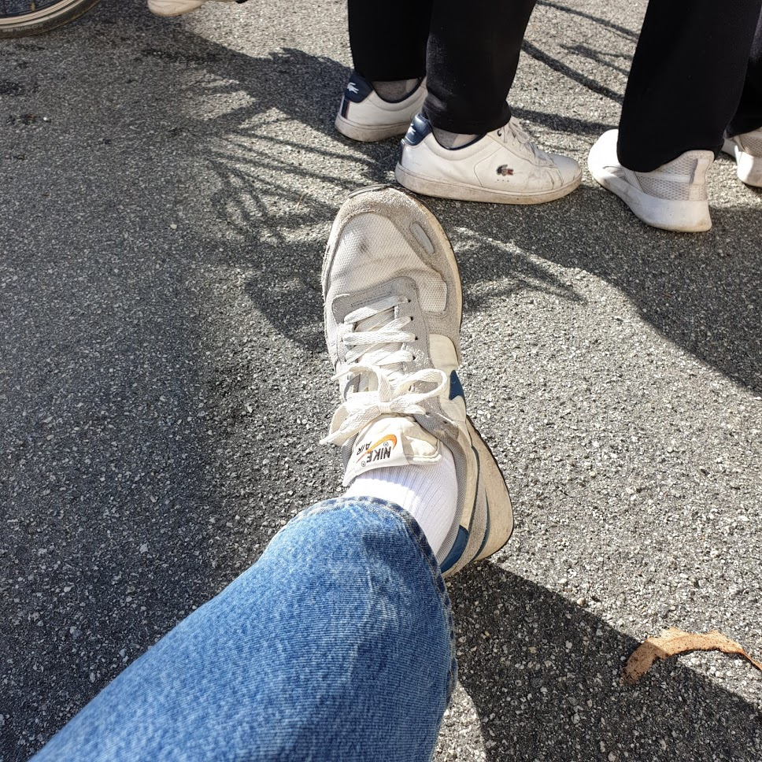
(고민해결을 위해 모인 다리들. 그 와중에 여유롭게 사진 찍고 있네?)
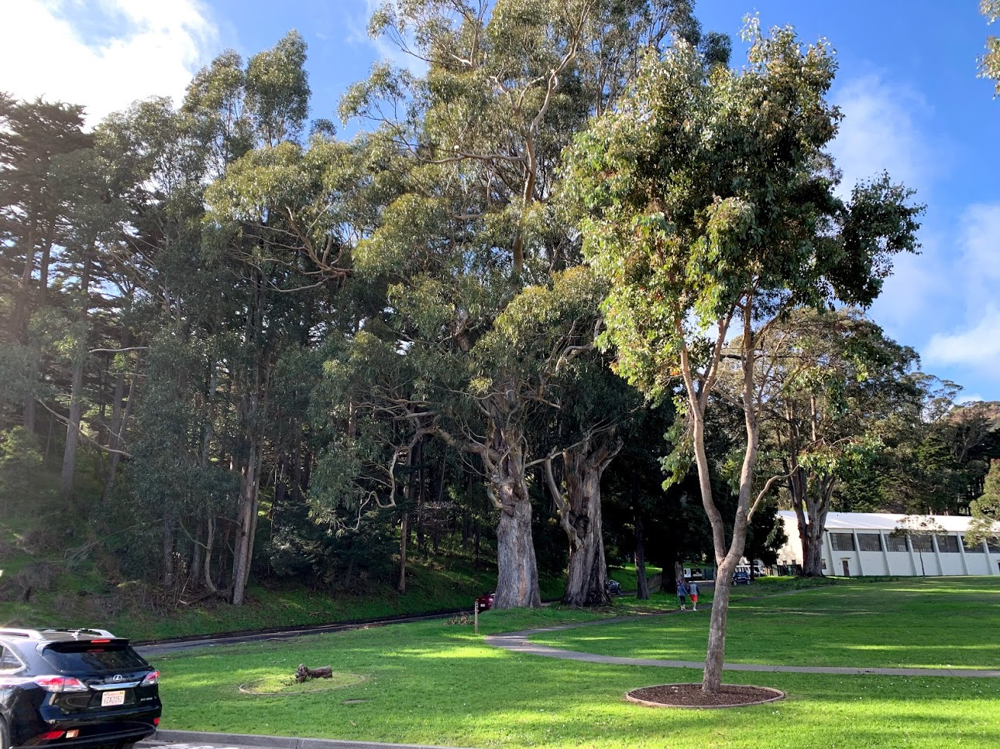
(우리가 멈춰선 곳.)
모든 해결책이 사라졌다. 적어도 그 자리에서 내가 생각할 수 있는
해결책은 없었다. 남은 건 하나. 희원이는 자전거를 직접 끌고 와야 했다.
이미 속절없이 흐른 시간이 한 시간 가량이었다. 돌아가는 배 시간이
언젠지도 모르고 가서 밥도 먹어야 했으며 소살리토 구경도 해야만 했다.
더 이상 이곳에 나타나지 않을 영웅을 기다리며 서있을 수만은 없었다.
가슴 아픈 순간이다. 미국에 따로 도착한 것 말고는 여행 내내 딱히 떨어져
본 적 없는 4명이었기에 더 미안했다. 우린 자전거가 멀쩡한 3명 먼저 타고
가 소살리토에서 희원이를 기다리기로 했다. 떠나는 마음이 무거웠다.
남겨진 사람의 마음은 어땠을까? 잘은 모르겠지만 딱히 다르지 않았을
것이다. 그렇게 3명 먼저 출발해 또다시 오르막을 오르고 이어진 내리막을
따라 소살리토에 도착했다. 그곳은 예쁘게 단장한 아기자기한 집들이 모여
있는 조용하고 한적한 동네였다. 집들 사이사이와 그 너머로 보이는
나무들은 자연의 멋을 보여주었고 정갈히 닦인 길 또한 예뻐 보였다.
하지만 뭔가가 아쉬웠다. 눈에 비친 풍경이 아쉬웠다기보다는 뒤따라오는
사람의 부재가 느껴졌기 때문일 것이다. 우린 그 아름다운 동네를 자전거를
타고 순식간에 지나왔다. 조금 천천히 즐기면서 와도 괜찮을 터였다. 근데
그러지 않았다. 무언가에 사로잡힌 사람들 마냥 날쌔게 달려왔다. 정신을
차려보니 이미 동네 아래쪽, 사람들로 붐비는 관광지에 와 있었다. 바다
내음이 물씬 풍겨오는 한적한 길 위에 자전거를 세우고 의자에 자리를
잡았다. 그리고는 두고 온 친구를 기다렸다. 아무것도 하지 않고 멍하니
눈앞의 바다를 바라보며 기다리기만 했다. 그날, 우리가 할 수 있는 일은
천천히 소살리토를 즐기면서 내려오는 것이 아니라 자리 잡고 앉아 친구를
기다리는 일이라는 것을 방금 글을 쓰면서 알아챘다. 우린 구경을 ‘안’한
게 아니라 ‘못’한 것이었다. 구경을 하는 것보다 기다리는 게 마음이
편했다. 한명을 빼두고 세 명이서만 여행의 추억을 남기기 싫었던
탓이리라. 다들 입 밖으로는 거칠게 자전거를 탄 희원이를 질책했지만
속으로는 어서 그가 오길 바라고 있었다.

(어서 와라 희맹아.)
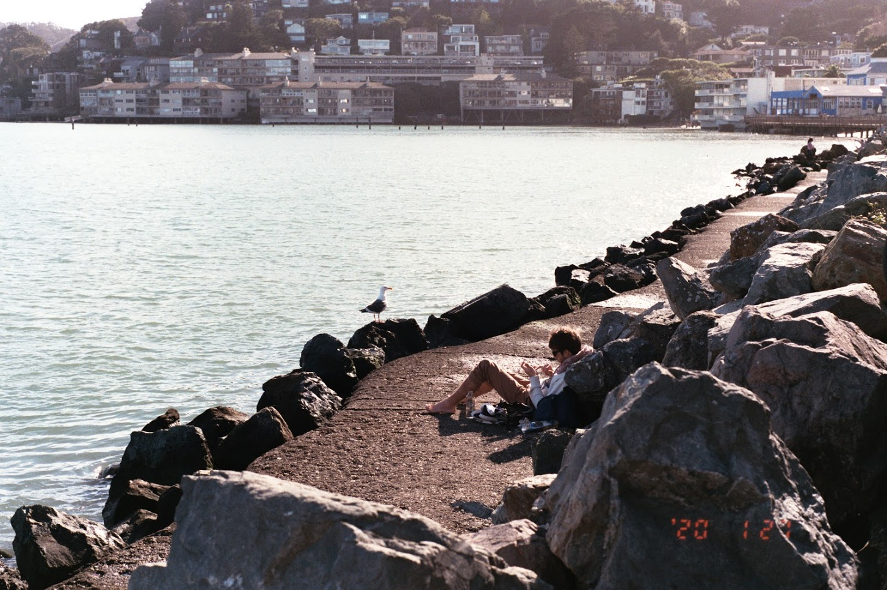
(다들 감탄했던 뭔가가 간지나게 베이글 먹던 아저씨.)
시간이 계속해서 흘렀다. 3명은 그래도 이왕 온 거 구경도 좀 더 하고
목도 축이고 무엇보다 고생해서 끌고 오는 희원이를 마중 나가기 위해
다시 동네 쪽에 있던 슈퍼로 향했다. 음료수를 사서 나오는 길, 익숙한
느낌의 사람이 다가오고 있었다. 내색은 안했지만 누구보다 보고 싶던
아이였다. 그길로 우린 밥을 먹으러 갔다. 나름대로 역경을 이겨낸 것에
대해 보상을 해주고 싶었다. 사실 시간으로만 보면 바퀴가 터지고 나서
전화하고 부탁하고 할 것 없이 그냥 바로 희원이는 끌고 오고 나머지는
타고 오면 가장 빠르게 올 수 있었다. 하지만 우리 중 그 누구도 이
해결책을 가장 먼저 입에 올리지 않았다. 같이 보고 함께 즐기고
여행하며 드는 감정과 생각을 그 자리에서 다 같이 나눌 때가 행복하다는
것을 마음속에 지니고 있었기 때문이었다. 설령 시간을 흘려보낼지라도
최대한 함께할 수 있는 해결책을 쥐어짜고 다른 사람에게 도움을 구하는
과정을 거쳤다. 시애틀 2일차를 기억하는가? 케리공원을 가며
“돌이켜보니 진정으로 여행을 찬란하게 빛냈던 것은 ‘우리’라는 이름으로
묶여 내 옆에서 먹고, 자고, 쌌던 친구들이었다. 외면적 목표의 달성을
위해 시간과 돈을 들여 비행기를 타고 태평양을 건너 멀리 떠나왔지만
일산의 작은 노래방에서부터 함께한 그들이 나의 비어있는 내면적 목표를
채워준, 진정한 ‘여행의 이유’였다.”라고 느낀 이 생각 때문이었는지는
몰라도 해안경비소 앞에서 우린 여행의 내면적 목표이자 진정한 ‘여행의
이유’였던 서로서로를 지키기 위해 최선을 다했다. 땡볕에 한 시간을
서서 전화를 하고 인터넷으로 해결책을 찾아보고 우버를 부르기 위해
애썼던 순간, 순간이 또 다른 우리만의 여행이었고, 결코 가벼이 결정할
수 없는 결단을 내리기까지 고민했던 일분, 일초가 나름의 여행이었다.
당연히 그날, 그 귓전을 때리던 펑! 소리가 지금까지 아쉬움으로
남아있음은 자명하지만, 어쩌면 그 소리는 우리가 자각하지 못하는
여행이 시작됐음을 나타내는 신호탄이었다. 그리고 미국여행은 끝났지만
아직 해안경비소 앞에서 시작된 무형의 여행은 끝나지 않았다.
여행에서 돌아와 다들 자신이 찍은 사진을 구글포토에 올려 공유하고
나서야 알았다. 그날 그렇게도 예쁜 동네를 사진으로 남긴 사람은 단 한
명, 강희원이었다. 그는 앞서간 3명이 쌩 하고 지나간 길을 걸어오며
중간 중간 사진을 남겼다. 속도 차이도 있었겠지만, 무엇보다 가슴에
지닌 무게감의 차이가 컸을 것이다. 남겨졌다는 것과 떠나왔다는 것.
생각보다 달랐나보다. 덕분에 사진으로라도 다시 볼 수 있어 다행이다.
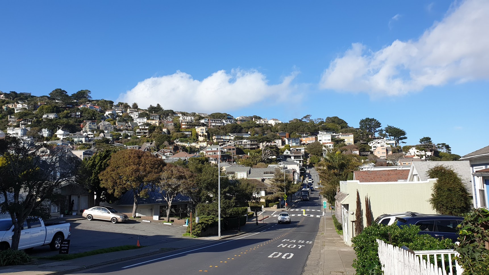
(한달 살기 하고 싶은 마을.)
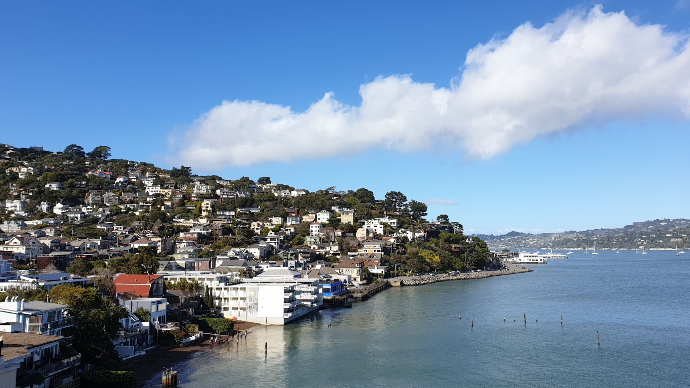
(저 방파제 어딘가 3명이 있었다.)
소살리토는 그렇게 나에게 그저 눈으로만 예쁜 풍경을 안겨주기보다 생각지 못한 마음의 교훈을 쌓아주었다. 아침에 떠올렸던 여행의 매력임이 틀림없었다.
이제야 소살리토가 눈에 들어온다. 사람들로 붐볐지만 동네의 분위기가
소란스러움을 누르고 한적함과 여유를 불어넣어 주었다. 자전거를 보관소에
맡긴 뒤, 두 발로 동네를 디뎠다. 나를 비추는 햇빛에 정신을 차리지
못할...뻔 했으나 배고픔이 먼저 몰려왔다. 강렬했다. 식당을 찾아야 했다.
고생도 한 겸, 맛 집을 찾아 그 어떤 때보다 맛있는 식사를 하고 싶었다.
해외여행을 다닐 때 정말 없어서는 안 될 필수품을 하나 뽑자면 단연 구글
지도이다. 여행 계획을 세울 때는 물론이거니와 여행을 다니는 도중에 길을
찾을 때도, 식당을 찾을 때도, 슈퍼를 찾을 때도 정말 요긴하게 쓰인다.
구글 지도로 주변 식당을 검색하면 위치는 기본이요, 별점 리뷰와 메뉴까지
상세하게 나온다. 우린 그것을 통해 우리가 할 수 있는 최대한으로 성대한
식사를 위해 검색을 거듭했고 그렇게 찾은 식당이 바로 창밖으로 바다가
보이는 Scoma's of Sausalito이었다. 가보자~가보자~
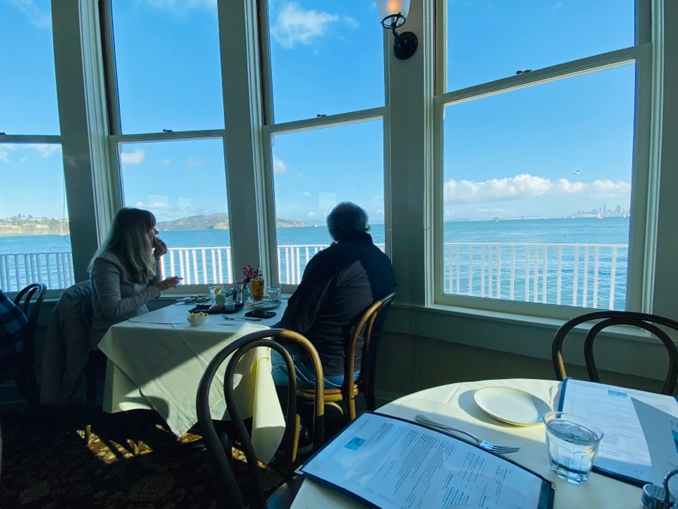
(바다가 참 예뻐요.)
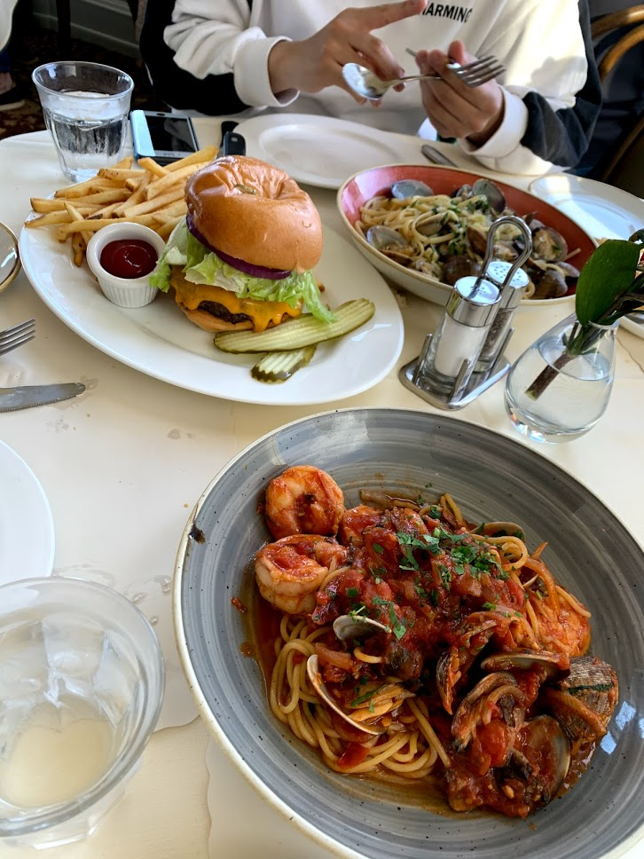
(아래에 보이는 해물 파스타가 참맛이었습니다.)
식당은 예상대로 성공이었다. 분위기와 음식 모두 지친 우리를
달래주기에 충분했다. 하지만 무엇보다 인상적이었던 점은 따로 있었다.
무슨 연유인지는 몰라도 모두를 위해 선뜻 자금을 쾌척한 재정이가 그
주인공이다.
지난번에도 언급한 바와 같이 우리의 여행은 매우 궁핍했다. 그런
우리에게 샌프란시스코의 살인적인 물가는 정말 날카롭게 우리의 통장을
조여 왔다. 어제 우리의 1호 영웅이 나타나 그나마 숨을 돌릴 수 있게
해주었으나 상황은 크게 다르지 않았다. 이미 내일 계획된 빅 이벤트
하나가 있었기 때문에 오늘은 조용조용 싼 값에 배를 불릴 수 있는
식당을 가려 했으나 어쩌다보니... 비싼 식당에 와 버린 것이었다.
총무로서 머리가 아파오는 순간이다. 나에겐 데이터가 있다.
카카오뱅크에 찍힌 잔고와 남은 여행 일정. 하지만 동시에 맛있는 음식,
풍족한 식사를 원하는 친구들의 눈빛 또한 눈에 들어온다. 오히려 말이
아닌 눈빛뿐이라 더 마음에 꽂힌다. 괜히 한 끼 식사 값을 너무 적게
잡은 것은 아닌지, 계산에 틀린 곳은 없었는지 가슴 졸이게 되고 행여나
그랬을까봐 친구들에게 미안해진다. 이게 돈의 힘인가 보다. 돈은 좋든
싫든 많든 적든 우리의 일상을 정의한다. 그렇게 우리가 또 다시 절제와
검소, 절약의 땅에 발을 올리려던 참에, 그가 나타난 것이다.
말이야 쉽게 할 수 있다. “그냥 세뱃돈 받은 김에 그런 거야.”
하지만 세뱃돈이야 아마 우리 4명 모두 받았었을 것이다. 그중에
재정이처럼 행동한 사람은 그가 유일했다. 누구도 선뜻 쉽게 하지 못할
일을 그는 해냈다. 자기 스스로만의 만족을 위한 곳에 쓸 수도 있었고
마땅히 그래야 할 돈이었지만 그는 웃으며 여행통장으로의 송금을
택했다. 그것이 본인의 행복을 위해서였던 아니던 그건 중요하지 않을 것
같다. 결과적으로 그 덕에 나는 총무로서의 딜레마를 덜었고 4명은 멋진
식당에서 행복한 식사를 했다.
대학에 들어오고 난 뒤, 그 악명 높다는 조별과제에 맞닥뜨린 적이
있었다. 사람들이 조별과제를 싫어하는 이유는 뻔하다. 자신의 책임을
다하지 않고 무임승차를 감행하는 사람들로 인해 그룹에 부담이 가중되기
때문이다. 다행히 나와 함께 과제를 했던 사람들은 각자 맡은 일에
충실했기에 무사히 과제를 마칠 수 있었다. 우리 모두는 조별과제가
순탄히 끝나게 되는 방법을 잘 알고 있다. 위에처럼 본인의 일을 다 하면
된다. 초, 중, 고, 대학교를 거치면서 수없이 맞닥뜨리는 상황인 만큼
사람들은 저절로 집단 속에서의 개인의 책임을 중요시 여긴다. 하지만 딱
거기까지다. 개인이 짊어진 양만큼만, 본인이 맡은 양만큼만 하게 되기
쉽고 그것이 너무나도 당연시 된다. 그 이상으로 나아간다는 것은
생각하기 어렵고 실천하기는 더더욱 어렵다. 나 또한 ‘주어진 만큼만’의
마인드로 삶을 살아왔다. 마땅히 해야 할 일은 당연히 행하지만 그
이상의 일, 그것도 내가 아닌 남을 위한 그 이상의 일을 한 적은 잘
기억이 나지 않는다. 그토록 하기 껄끄러운 일이다. 재정이는 이미 여행
경비에서의 자기 몫을 지불함으로써 본인의 책임을 다했다. 하지만 그는
식당에서 마치 별것 아니라는 듯이 책임의 바운더리를 넘어섰다.
내가 잘 아는 친구라고 생각함에도 가끔씩 이렇게 생경한 모습을
보여주곤 하는 그에게, 그땐 여러 가지로 정신이 없어 제대로 고맙다는
말도 못했던 것 같다. 아니면 놀라움을 드러낸 게 전부였을 것이다.
어쩌면 물 흐르듯 지나갔을 수도 있다. 늦었지만 지금에서라도 나는
그에게 그날의 호의와 결심에 감사와 경의를 표하고 싶다. 덕분에 많이
먹었고, 많이 느꼈고, 많이 배웠다고.
이젠 배도 부르겠다, 목적지에 도착도 했겠다, 주변을 여유롭게 둘러보고
싶었다. 하지만 남은 변수가 하나 있었다. 배가 떠나는 시각! 자전거
반납이 17시까지였기에 그전까진 돌아가야 했다. 거기다 소살리토에서 다시
샌프란시스코의 도심으로 향하는 배의 도착지는 두 곳으로 나뉘었다.
하나는 자전거 렌탈샵과 가까운 도시 북부의 피셔맨스워프였고 다른 하나는
동남쪽으로 조금 멀리 떨어진 페리빌딩 선착장이었다. 거리를 고려하면
피셔맨스워프 선착장으로 가는 것이 좋았겠으나... 시간표를 확인해보니
16:55분 배 밖에 없었다. 어쩔 수 없이 우린 15:50분에 페리빌딩으로
향하는 배를 타기로 했고, 덕분에 이곳에서 우리가 즐길 수 있는 시간은
30분이 채 안되었다. 벌써 아쉬웠다. 하지만 어쩌겠는가. 남은 시간이라도
최대한 소살리토를 맛보아야지. 우린 눈에 보이는 디저트 가게에 들러
달달한 아이스크림을 입안에 녹였다. 따뜻한 체온을 맛본 아이스크림이
사라지는 속도만큼 시간도 같이 녹아 없어지는 것 같았다. 눈 깜짝할 새에
다 먹었다. 작별의 시간도 어느새 눈앞에 다가와 있었다. 자전거를 다시
찾은 뒤, 배표를 사느라 약간 헤맸지만 무사히 페리 빌딩으로 향하는 배에
올랐다. 출항을 알리는 뱃고동소리가 들렸다. 이젠 정말 마지막이구나
싶었다. 소살리토가 더 멀어지기 전에 풍경을 눈에 쓸어담았다. 바싹 마른
재생지가 잉크를 빨아들이듯 그날, 그곳의 향기와 분위기를 오감을 동원해
최대한으로 흡입했다.
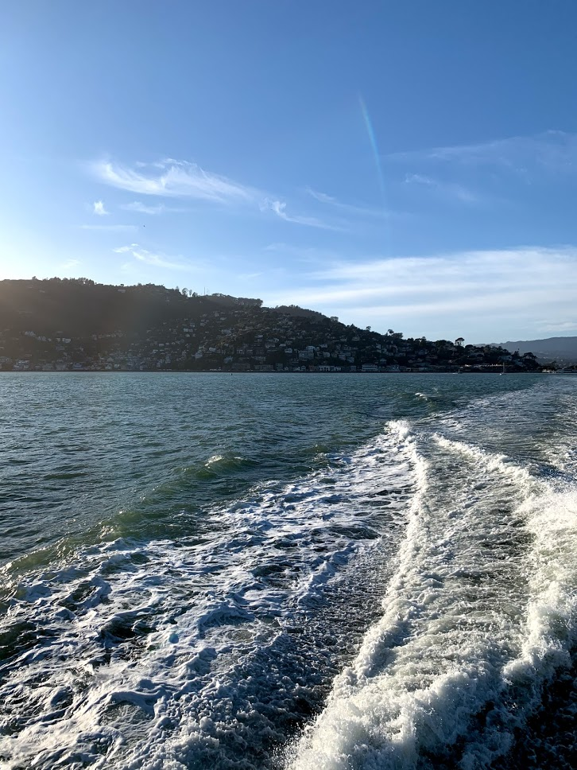
(멀~어져~가는~)
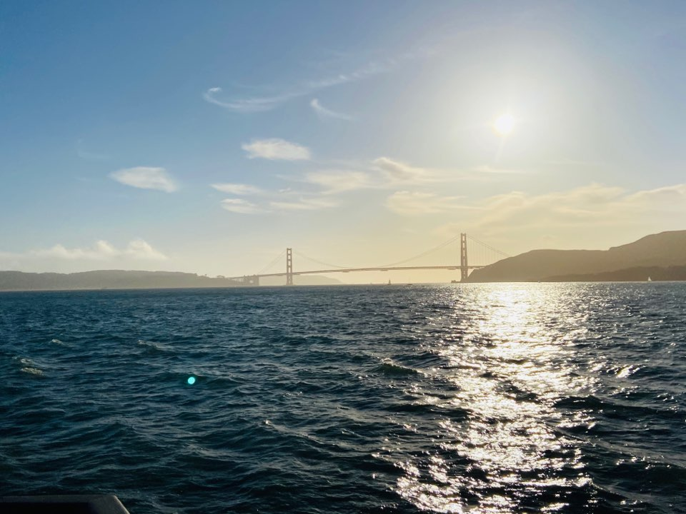
(자전거 타고 멀리도 왔네.)
중간에 배 위에서 내일 들를 알카트라즈 섬 구경을 했다. 크게 남은 아쉬움이 조금은 기대감으로 바뀌었다. 어느덧 페리빌딩 선착장에 도착했고 시간이 얼마 남지 않았기에 서둘러 자전거를 타고 가게로 향했다. 물론 바퀴가 터진 희원인 끌고 왔지만…….
타고 오면서 들었던 생각은 ‘어라? 꽤 먼데?’였다. 자전거를 타고 온 세
명도 시간을 맞추기 빠듯했다. 먼저 가게에 도착하니 아까 그 푸근한
아저씨가 우릴 맞이해 주었다. 한 명은 바퀴가 터져 조금 늦을 것이라
얘기하니 이미 전화로 들어 알고 있다며 괜찮다고 미안하다고도 했다.
희원이는 생각보다 엄청나게 금방 도착했다. 사람인가 싶었다. 그렇게
빠르게 올 수 있는 거리가 아니었는데 숨을 헐떡이며 거의 제시간에
자전거를 반납했다. 죽을 것 같아하는 표정을 보니 어떻게든 시간을
맞춰보자 발바닥에 불이 나게 자전거를 끌고 뛰어 온 것이 분명했다. 결국
바퀴가 터지는 바람에 시간을 버리게 된 것은 모두에게 아쉬운 일이었지만
누구보다 정신적으로, 육체적으로 고생한 사람은 희원이였다. 어쩔 수 없는
악재가 그에게 닥쳤다. 억울하고 짜증나고 자신의 불운을 원망했겠지만
그래도 그는 더 이상의 피해를 막기 위해 그 먼 거리를 이 악물고 달렸다.
그것도 혼자서 자전거를 끌고 쉼 없이 뛰었다. 외롭고 힘들었겠지만
마지막까지 최선을 다했다. 그런 그 앞에서 소살리토에 대한 아쉬움을
표하는 것마저 실례로 느껴질 정도로 희원인 온 힘을 다했다.
말없이 가쁘게 숨을 내쉬는 그에게 음료수를 건네주었다. 야무지게
마시더라.
“그래 너 다 마셔라야~”
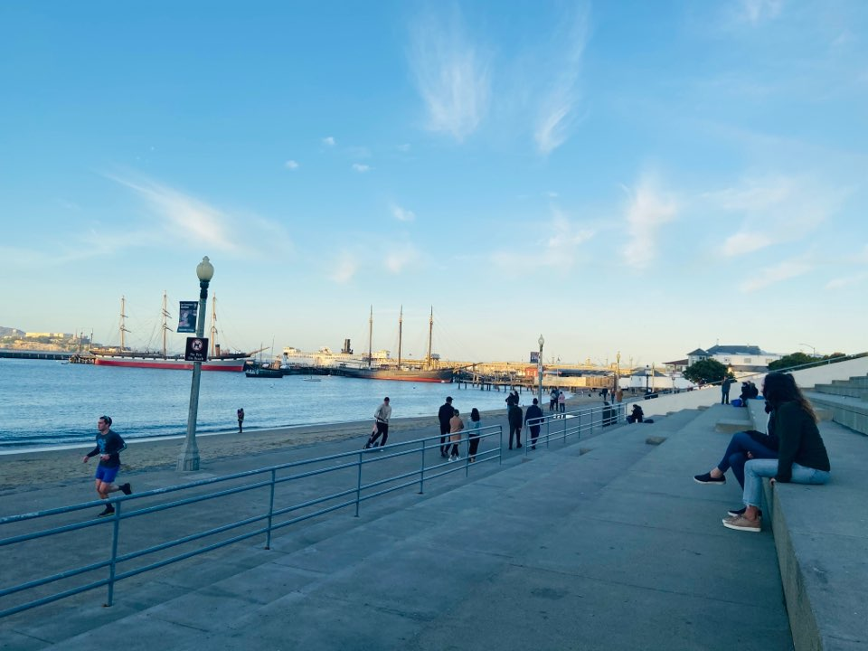
(다시 처음으로 돌아왔다. 희원이를 기다리며.)
저녁을 먹기 전 잠시 기라델리 초콜릿 가게에 들렀다. 딱 봐도 단맛이 뚝뚝
떨어질 것만 같은 초콜릿, 초콜릿 시럽을 곁들인 아이스크림이 안에
가득했다. 몇몇은 기념으로 한국으로 가져갈 초콜릿을 샀다. 다른 사람들도
일단 이 집의 맛을 느껴보고 싶었기에 4명이서 아이스크림을 하나 사 야외
테이블에서 깨작깨작 나눠먹었다. 하루의 모든 여정이 무사히 끝났다는
안도감과 쌓였던 여행의 피로가 분출됐지만 달디 단 차가운 아이스크림이
모든 것을 억눌러 주었다.
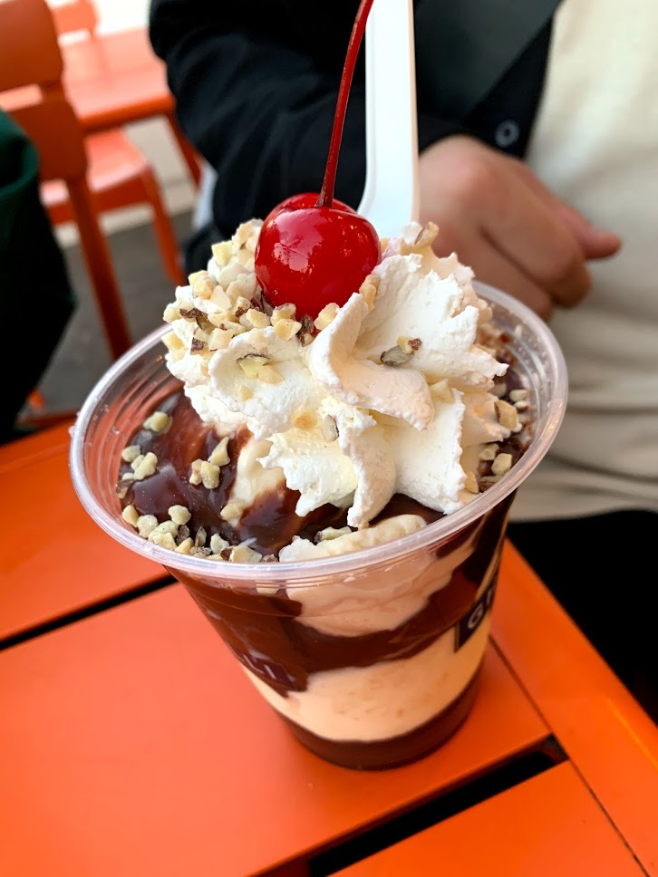
(비주얼만큼은..bb)
다들 어제 줄이 길어 못 먹었던 골든 보이 피자에 아쉬움이 남은 것인지
아니면 빠르게 숙소로 들어가고 싶었던 것인지 이유는 알 수 없지만
어쨌거나 오늘의 저녁은 골든 보이 피자를 포장해 숙소에서 먹는 것이었다.
우르르 몰려 갈 필요가 없었기에 포장해 올 사람 2명을 뽑기로 했다. 정말
이기고 싶었다. 희원이는 특히 그래 보였다. 그렇게 운명을 가를 가위 바위
보!를 했고 당첨된 두 명은 나와 희원이였다. 나는 그러려니 해도 강희원
얘는 정말 최고의 하루를 보내고 있었다. 축하한다. 어서 가자.
나머지 두 명을 먼저 숙소로 보내고 둘이서 터덜터덜 피자집을 향해
걸어갔다. 힘들어서 정신이 나간 탓일까. 둘은 카메라를 키고 이상한 말을
지껄였다. 눈에 보이는 모든 사물들, 오늘의 여행 이야기, 만약 바퀴가
터지지 않았더라면 어떻게 하루가 흘러갔을까를 의식의 흐름대로 풀어냈다.
야심한 밤의 쇼쇼쇼라나 뭐라나……. 피자집까지 거리가 꽤 멀었기에 둘의
헛소리는 계속 되었다. 아니다. 나만 떠들었나? 아무튼 쉴 새 없이 입을
놀리다보니 피자집도 가까워지는 것 같았다. 주변은 어두웠고 해가 진 후
미국의 길거리를 이렇게 오랫동안 걸어 본 것도 처음이었으나 아무런
공포감도 느껴지지 않았다.
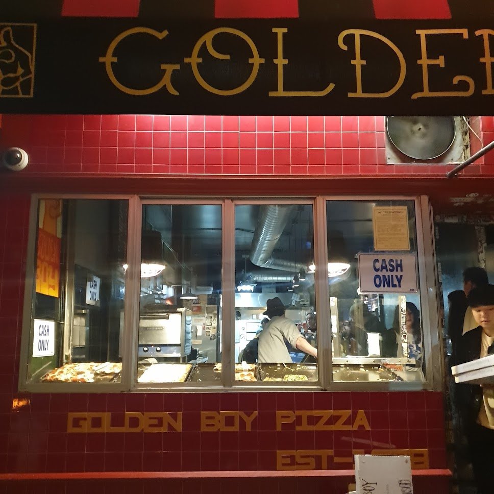
드디어 도착이다. 가게 앞에 다다른 순간, 정말로 안도의 한숨이 크게
나왔다. CASH ONLY가 보이는가? 나는 내가 가위 바위 보에서 이겼다면 걸린
친구에게 카드만 줄 예정이었다. 만약 그랬다면 그들은 가게 앞에서
엄청나게 큰 좌절과 허탈을 맛보았을 터. 힘들지만 공금 현금을 들고 있는
내가 온 것이 다행이었다.
힘들게 도착한 만큼 모든 종류의 피자를 두 조각씩 다 달라고 하니 크게 두
판을 받았다. 다시 돌아가야 했다. 하루의 마지막은 놀라우리만치 시작과
같았다.
처음엔 평탄했다. 자전거 렌탈샵에서 피자집까지 가는 길이 평지였기에
숙소로 돌아가는 길도 그럴 것이라 예상했다. 하지만 틀렸다. 우릴
기다리고 있는 것은 마치 히말라야 산맥의 에베레스트 산처럼 높게 솟아
있는 샌프란시스코의 오르막이었다. 아침에 롬바드 스트리트에서
‘내려다’보이던 샌프란시스코의 전경. 우리가 내려다 볼 수 있었던 이유가
차츰 떠올랐다. 아침엔 저 아래, 눈으로 보기만 했던 길들을 이번엔 직접
올라야 했다. 여유로운 관망자에서 처절한 행위자로, 꽃길을 걷던 탑
독에서 거친 시멘트 바닥을 오르는 언더 독으로 ‘러시안 힐(당시 올라가던
길 이름)’을 헤쳐가야 했다.
오르고 또 오르고 계속해서 올라 드디어 롬바드길에 도착했다. 당시 찍은
영상을 보니 숨소리가 반을 채우고 남은 반은 헛소리로 오디오를 채웠다.
얼마나 힘들었으면 그랬을까. 아침부터 오르막 등반에 이어 자전거를 타고
금문교를 거쳐 소살리토까지 갔으며 다시 오르막을 올랐으니 체력이 남아날
리가 없었다. 오늘 하루 중 가장 힘들고 지치는 순간이었다. 우버를 왜
타지 않았을까. 판단미스가 확실했다.
후. 다 왔다. 꿈에 그리던 숙소에 도착했다. 피자고 뭐고 샤워를 한 뒤
침대에 눕고 싶었지만 그래도 땀을 한바가지 흘리며 사온 귀한 녀석들을
무시할 순 없었다. 거기다 오늘은 미국시간으로 생일을 맞이한 희원이를 한
번 더 축하하기 위해 창민이가 한국에서부터 가져온 보드카를 다시금
꺼냈다. 피자와 콜라 그리고 보드카. 입 안으로 들어가는 탄수화물과
알콜이 지친 몸을 간신히 지탱해 주었다. 이미 침대에 등을 기대고 누운
재정이의 두 눈은 풀려있었다. 다른 사람들도 크게 다르지 않았을 것이다.
피자 맛은 딱히 기억이 나지 않는다. 이날 아침 아이리시 위스키에 이어 두
번째로 취한 게 확실하다. 아무리 붙잡으려 해도 잡히지 않는 온 몸에 힘이
빠져나가는 무력감, 정신은 멍해지고 단전에서부터 올라오는 열감, 그
와중에 차오르는 포만감의 삼위일체가 합쳐져 나를 집어 삼키려고 했다.
굳이 거부하지 않았다. 흘러가는 강물에 몸을 맡기듯이, 오늘 지겹도록
바라본 바다 위에 편히 몸을 뉘이듯이 몸에 힘을 뺀 채로 시간의 흐름에
올라탔다.
시간의 파도는 롬바드 스트리트, 햇살이 비추던 공원, 팰리스 오브
파인아트 그리고 금문교를 거쳐 소살리토로 나를 데려다 주었다. 조깅하던
사람들, 주인과 산책하는 강아지들, 자전거를 타고 마주하던 사람들의
얼굴이 문득문득 나를 지나쳐갔다. 방파제에 부딪혀 차르르 부서지는
파도소리와 함께 태양이 떠올랐다. 황금빛의 강렬한 에너지는 은밀한
속살까지 비추며 뜨겁게 파고 들어왔다. 여린 살갗이 뜨거웠지만 그
온기마저 거부할 수는 없었다. 또 다시 파도소리가 들려온다.
철써덕철써덕. 몸이 이리저리 요동친다. 태양마저 모습을 감췄다. 강렬한
온기가 온데간데없이 사라진 자리에 달빛이 뿜어낸 스산한 한기가
다가온다. 몸을 웅크린다. 한겨울, 따뜻한 연인의 포근한 품을 찾는
간절함이 발끝부터 아려온다. 무뎌진 손끝의 감각을 뚫고 찾아온 촉감.
파도의 끝, 흐름의 종착역에 다다랐음을 알려주는 포세이돈의 창끝이
시리게 느껴진다. 일 월 달 바다에 걸린 새파란 달 위의 셀레네여! 잠든
엔디미온을 어루만지듯 나를 만져주오. 당신의 손으로 소중히 쓰다듬어
주오. 시리게 다가온 창이 아프게 손등을 베어간다. 주위가 어둡다.
아무것도 보이지 않는다. 더듬거리는 손, 나아가려는 발 위로 시뻘건 피의
온기가 느껴진다. 비릿한 냄새가 난다. 여기가 어디일까. 의식을 잃어간다.
울컥하며 내뱉은 검붉은 혈흔이 몸을 적셔간다. 눈이 감기며 끝이 보인다.
파도가 다가온다. 철써덕철써덕. 바위섬에 부딪혀 부서지는 파도가
다가온다.
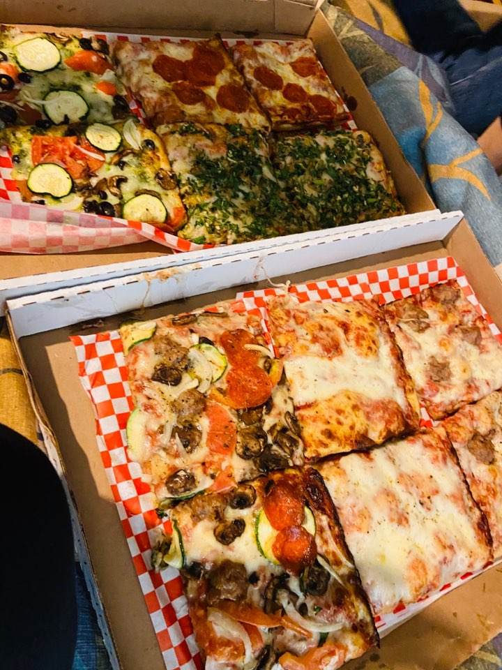
(피자 냠냠. 3일차 끝!)